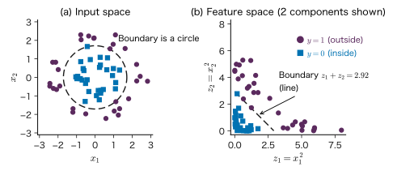

Chapter 10Kernel Methods — Learning from Similarity
- Samples described by two descriptors are arranged as an inner disk and an outer ring. How can a linear model, which can only draw straight lines, separate these two classes?
- Can we write the rule of thumb “materials with similar compositions have similar properties” directly into the prediction formula? If so, how should “similar” be measured?
- Increasing the number of features to tens of thousands would seem to make the computation heavy, so why can kernel methods handle even “infinitely many features”? What becomes heavy instead?
Suppose that samples described by two descriptors $x_1,x_2$ are split into those near radius 1 around the origin (vitrified) and those near radius 2.2 (crystallized). No matter what straight line we draw, we cannot separate the inner disk from the outer ring. But if we take the squared coordinates $x_1^{2}$ and $x_2^{2}$ as new coordinates, the inner points move to near $x_1^{2}+x_2^{2}\approx1$ and the outer points to near $x_1^{2}+x_2^{2}\approx4.8$, and now a single straight line separates them. Mapping the input into another space and then using a linear model is the starting point of this chapter.
The more dimensions the space we map into (the feature space) has, the richer the boundaries and curves it can represent, but the heavier the computation becomes. The key point of this chapter is that the solution of ridge regression and similar methods can be written using only the dot products of feature vectors (the dual representation). A function $k(\bm{x},\bm{x}')$ that computes the dot product directly is called a kernel, and the technique of computing with the kernel alone, without constructing the feature vectors, is called the kernel trick. A kernel can also be read as a quantity expressing “how similar two inputs are,” so the idea that “similar materials have similar properties” can be written directly as a formula. In this chapter we treat, in order, which functions can be used as kernels (positive definiteness), representative kernels and the meaning of the length scale, kernel ridge regression, the reason the solution becomes a superposition of the kernels at the data points (the representer theorem), kernel regression as a weighted average (the prototype of attention), and finally the limits imposed by computational cost.
- You can verify, using the coordinates of specific points, that two classes arranged in concentric circles become linearly separable under a feature map.
- You can derive that the solution of ridge regression can be written as $\bm{w}=\bm{\Phi}^{\tp}\bm{a}$ and $\bm{a}=(\bm{K}+\lambda\bm{I})^{-1}\bm{y}$, and compare the sizes of the primal and dual problems ($M$ and $N$).
- You can expand the polynomial kernel $(\bm{x}^{\tp}\bm{x}')^{2}$ to write out its feature map, and explain how it differs from $(\bm{x}^{\tp}\bm{x}'+1)^{d}$.
- You can prove that a Gram matrix is positive semidefinite and build kernels from sums, products, and so on of kernels. You can show by a counterexample that a given function is not a kernel.
- You can explain, using a two-point hand calculation and a figure, how the length scale $\ell$ of the RBF kernel and the regularization coefficient $\lambda$ change the curve of kernel ridge regression.
- You can compute Nadaraya–Watson kernel regression as a weighted average and show that it has the same form as attention.
- You can estimate the computational cost $O(N^{3})$ and the memory cost $O(N^{2})$ of kernel methods, and explain the invariance required of descriptors of materials.
Sections for the introductory route: This chapter belongs to the detailed route. On the introductory route, read only 10.12 (Summary); since the next chapter, Chapter 11, is also on the detailed route, you may proceed to Sections 13.1–13.3 of Chapter 13.
Notation: Symbols Used in This Chapter
The input is $\bm{x}\in\R^{D}$, the data are $\data=\{(\bm{x}_n,y_n)\}_{n=1}^{N}$, and the target values are collected as $\bm{y}=(y_1,\dots,y_N)^{\tp}\in\R^{N}$. The feature map is $\bm{\phi}:\R^{D}\to\R^{M}$, and the design matrix is $\bm{\Phi}\in\R^{N\times M}$ (its $n$th row is $\bm{\phi}(\bm{x}_n)^{\tp}$). The kernel is $k(\bm{x},\bm{x}')$, the Gram matrix is $\bm{K}\in\R^{N\times N}$ ($K_{nm}=k(\bm{x}_n,\bm{x}_m)$), and for a test input $\bm{x}_*$ we write $\bm{k}_*=(k(\bm{x}_1,\bm{x}_*),\dots,k(\bm{x}_N,\bm{x}_*))^{\tp}\in\R^{N}$. The dual variable (one coefficient per data point) is $\bm{a}\in\R^{N}$. The regularization coefficient is $\lambda\gt0$. Classification labels are $y\in\{0,1\}$, as in Chapter 9, but the simulator in Section 10.5 displays them in the convention of Chapter 11, $y\in\{-1,+1\}$.
As in Chapters 8 and 9, the loss is written as a sum over the data (Chapter 7 wrote it as a mean; when it is written as a sum, the rule of thumb for the magnitude of $\lambda$ differs by a factor of $N$). Note also that Chapter 24 uses the same $\bm{K}$ to mean the key matrix. In this chapter, every $\bm{K}$ is a Gram matrix.
10.1 Mapping to a Feature Space — Turning a Curved Boundary into a LineDetailed Route
10.1.1 A configuration that no straight line can separate
The linear classification model of Chapter 9 decides the class by the sign of the discriminant function $f(\bm{x})=\bm{w}^{\tp}\bm{x}+b$. The decision boundary $f(\bm{x})=0$ is a straight line in the input space (in general, a hyperplane). In a configuration like Figure 10.1(a), where one class surrounds the other, every straight line leaves points of both classes on both sides.
So we map the input $\bm{x}=(x_1,x_2)^{\tp}$ to a point in three dimensions by the following feature map.
\begin{equation} \bm{\phi}(\bm{x})=\begin{pmatrix}x_1^{2}\\ x_2^{2}\\ \sqrt2\,x_1x_2\end{pmatrix}\in\R^{3} \label{eq:10-feature-map} \end{equation}The coefficient $\sqrt2$ on the third component is included so that the dot product takes a clean form in Section 10.3. Writing the coordinates of the image as $\bm{z}=\bm{\phi}(\bm{x})$, $z_1=x_1^{2}$, $z_2=x_2^{2}$, $z_3=\sqrt2x_1x_2$, we have
$$ z_1+z_2=x_1^{2}+x_2^{2}=r^{2} $$so the squared distance from the origin, $r^{2}$, becomes a linear expression in the coordinates of the feature space. Therefore, if we use the linear discriminant function $g(\bm{z})=z_1+z_2-c$ in the feature space ($\bm{w}=(1,1,0)^{\tp}$, $b=-c$), the boundary $g=0$ is the plane $z_1+z_2=c$ in the feature space and the circle $x_1^{2}+x_2^{2}=c$ in the input space. A model that is “linear in the feature space” thus represents a curved boundary in the input space.

np.random.default_rng(20261113). $x_1,x_2$ are standardized, dimensionless descriptors. The threshold $2.92$ is the midpoint of $r_0^{2}$ and $r_1^{2}$, and it separates 59 of the 60 points correctly.The threshold $c=2.92$ was chosen as the midpoint $(1+4.84)/2$ of the squared radius of the inner circle, $1.0^{2}=1$, and the squared radius of the outer ring, $2.2^{2}=4.84$. In Figure 10.1(b), the inner points (■) gather in a triangular region near the origin, and the outer points (●) lie outside the line. Only the one point whose radius was shifted greatly by noise falls on the wrong side.
10.1.2 Linear models in the feature space
In general, we map an input $\bm{x}\in\R^{D}$ to a feature vector $\bm{\phi}(\bm{x})=(\phi_1(\bm{x}),\dots,\phi_M(\bm{x}))^{\tp}\in\R^{M}$ consisting of $M$ basis functions, and set
\begin{equation} f(\bm{x};\bm{w})=\bm{w}^{\tp}\bm{\phi}(\bm{x}) \label{eq:10-linear-model} \end{equation}($\bm{w}\in\R^{M}$); this was the basis function model of Chapter 8. “Linear” means linear in $\bm{w}$; the model may be curved in $\bm{x}$. The same can be done with the logistic regression of Chapter 9. In Simulator 9.1 of Chapter 9 (the logistic regression tab), choose the concentric data and change the features from “first order” to “with second-order terms” (adding $x_1^{2}$, $x_1x_2$, $x_2^{2}$); the training accuracy rises from about 60 % to 100 %, and the boundary changes from a straight line to an ellipse.
Then, if we need a more complicated boundary, should we simply keep adding features? If we build all monomials up to degree three from a $D$-dimensional input, the number of features is 286 for $D=10$ and 176851 for $D=100$ (Section 10.3). Building the features explicitly and handling an $M\times M$ matrix quickly becomes impractical. In the next section we show that the solution can be rewritten as a problem whose size is the number of data points, $N$.
Example 10.1: Mapping four points to the feature space
Consider two points on the inner circle, $\bm{x}_A=(1,0)^{\tp}$ and $\bm{x}_B=(0.6,0.8)^{\tp}$, and two points on the outer circle, $\bm{x}_C=(2,0)^{\tp}$ and $\bm{x}_D=(-1.2,1.6)^{\tp}$. (1) Map each point by Eq. \eqref{eq:10-feature-map}. (2) Find the value of the feature-space discriminant function $g(\bm{z})=z_1+z_2-2.25$ at each point, and verify that the four points are separated correctly. What is the boundary in the input space? (3) Compute $\bm{\phi}(\bm{x}_A)^{\tp}\bm{\phi}(\bm{x}_B)$ and $(\bm{x}_A^{\tp}\bm{x}_B)^{2}$ and compare them.
Solution. (1) Use $\sqrt2\approx1.4142$.
- $\bm{\phi}(\bm{x}_A)=(1,\ 0,\ 0)^{\tp}$
- $\bm{\phi}(\bm{x}_B)=(0.36,\ 0.64,\ 0.6788)^{\tp}$ (the third component is $\sqrt2\times0.48$)
- $\bm{\phi}(\bm{x}_C)=(4,\ 0,\ 0)^{\tp}$
- $\bm{\phi}(\bm{x}_D)=(1.44,\ 2.56,\ -2.7153)^{\tp}$ (the third component is $\sqrt2\times(-1.92)$)
(2) $g$ does not use the third component. $g(A)=1+0-2.25=-1.25$, $g(B)=0.36+0.64-2.25=-1.25$, $g(C)=4+0-2.25=1.75$, $g(D)=1.44+2.56-2.25=1.75$. The two inner points are negative and the two outer points are positive, so they are separated correctly. $g=0$ is $x_1^{2}+x_2^{2}=2.25$, that is, a circle of radius 1.5 in the input space.
(3) The dot product in the feature space is $\bm{\phi}(\bm{x}_A)^{\tp}\bm{\phi}(\bm{x}_B)$ $=1\times0.36+0\times0.64$ $+0\times0.6788=0.36$. On the other hand, $\bm{x}_A^{\tp}\bm{x}_B=1\times0.6+0\times0.8=0.6$, so $(\bm{x}_A^{\tp}\bm{x}_B)^{2}=0.36$. The two agree. Without constructing the feature vectors, simply squaring the dot product of the inputs gives the dot product in the feature space. This is the simplest example of the kernel trick in Section 10.3.
10.2 Dual Representation — Rewriting the Weights as Coefficients on the DataDetailed Route
10.2.1 Revisiting the solution of ridge regression
We start from the ridge regression of Chapter 8 (Chapter 8, Section 8.6). The loss function is
\begin{equation} L(\bm{w})=\frac12\norm{\bm{y}-\bm{\Phi}\bm{w}}^{2}+\frac{\lambda}{2}\norm{\bm{w}}^{2} \label{eq:10-ridge-loss} \end{equation}($\bm{w}\in\R^{M}$). Here $\bm{\Phi}\bm{w}\in\R^{N}$ is the vector of the predicted values at all the data points. The gradient is $\nabla L(\bm{w})=-\bm{\Phi}^{\tp}(\bm{y}-\bm{\Phi}\bm{w})+\lambda\bm{w}$, and setting it equal to $\bm{0}$ gives
\begin{equation} (\bm{\Phi}^{\tp}\bm{\Phi}+\lambda\bm{I}_M)\,\bm{w}=\bm{\Phi}^{\tp}\bm{y} \label{eq:10-primal} \end{equation}Here $\bm{I}_M$ is the $M\times M$ identity matrix. The matrix to be solved, $\bm{\Phi}^{\tp}\bm{\Phi}+\lambda\bm{I}_M$, is $M\times M$, so its size is determined by the number of features $M$. We call this the primal problem form.
10.2.2 The weights are a superposition of the feature vectors of the data points
Instead of solving the condition that the gradient is $\bm{0}$ for $\bm{w}$, we rearrange it as follows.
Derivation: Dual representation
In $\nabla L=\bm{0}$, keep only the $\lambda\bm{w}$ term on the left-hand side and divide both sides by $\lambda\gt0$.
$$ \begin{aligned} \lambda\bm{w}&=\bm{\Phi}^{\tp}(\bm{y}-\bm{\Phi}\bm{w})\\ \bm{w}&=\bm{\Phi}^{\tp}\,\frac{1}{\lambda}(\bm{y}-\bm{\Phi}\bm{w}) \end{aligned} $$The quantity $\frac{1}{\lambda}(\bm{y}-\bm{\Phi}\bm{w})$ on the right-hand side is an $N$-dimensional vector, so we denote it by $\bm{a}$.
\begin{align} \bm{a}&\equiv\frac{1}{\lambda}(\bm{y}-\bm{\Phi}\bm{w})\in\R^{N} \notag\\ \bm{w}&=\bm{\Phi}^{\tp}\bm{a}=\sum_{n=1}^{N}a_n\bm{\phi}(\bm{x}_n) \label{eq:10-dual-w} \end{align}The $n$th column of $\bm{\Phi}^{\tp}$ is $\bm{\phi}(\bm{x}_n)$, so $\bm{\Phi}^{\tp}\bm{a}$ is the sum of the feature vectors with coefficients $a_n$. Next, we substitute $\bm{w}=\bm{\Phi}^{\tp}\bm{a}$ into the definition of $\bm{a}$ to eliminate $\bm{w}$.
$$ \begin{aligned} \lambda\bm{a}&=\bm{y}-\bm{\Phi}\bm{w}=\bm{y}-\bm{\Phi}\bm{\Phi}^{\tp}\bm{a}\\ \bm{\Phi}\bm{\Phi}^{\tp}\bm{a}+\lambda\bm{a}&=\bm{y}\\ (\bm{K}+\lambda\bm{I}_N)\,\bm{a}&=\bm{y},\qquad \bm{K}\equiv\bm{\Phi}\bm{\Phi}^{\tp}\in\R^{N\times N} \end{aligned} $$$\bm{K}$ is positive semidefinite (Section 10.4), so if $\lambda\gt0$, all eigenvalues of $\bm{K}+\lambda\bm{I}_N$ are at least $\lambda$ and the matrix is invertible. Hence
\begin{equation} \bm{a}=(\bm{K}+\lambda\bm{I}_N)^{-1}\bm{y} \label{eq:10-dual-a} \end{equation}Conversely, if we form $\bm{w}=\bm{\Phi}^{\tp}\bm{a}$ from this $\bm{a}$, then retracing the above manipulations in reverse shows that it satisfies $\nabla L(\bm{w})=\bm{0}$. Since $L$ is strictly convex (for $\lambda\gt0$), this is the unique minimum point.
∎
The $(n,m)$ component of $\bm{K}$ is
\begin{equation} K_{nm}=\bm{\phi}(\bm{x}_n)^{\tp}\bm{\phi}(\bm{x}_m) \label{eq:10-gram} \end{equation}which is the dot product of the feature vectors of a pair of data points. We call $\bm{K}$ the Gram matrix. The prediction at a new input $\bm{x}_*$ is obtained by substituting $\bm{w}=\bm{\Phi}^{\tp}\bm{a}$:
\begin{align} f(\bm{x}_*)&=\bm{w}^{\tp}\bm{\phi}(\bm{x}_*) \notag\\ &=\bm{a}^{\tp}\bm{\Phi}\bm{\phi}(\bm{x}_*) \notag\\ &=\sum_{n=1}^{N}a_n\,\bm{\phi}(\bm{x}_n)^{\tp}\bm{\phi}(\bm{x}_*) \notag\\ &=\bm{k}_*^{\tp}\bm{a} \label{eq:10-dual-pred} \end{align}Here the $n$th component of $\bm{k}_*=\bm{\Phi}\bm{\phi}(\bm{x}_*)\in\R^{N}$ is $\bm{\phi}(\bm{x}_n)^{\tp}\bm{\phi}(\bm{x}_*)$. Both in training (finding $\bm{a}$) and in prediction, the feature vectors appear only in the form of dot products. This is the key point of the dual representation.
Which of the primal and dual problems is cheaper depends on the relative sizes of $M$ and $N$ (Figure 10.2). The cost of solving simultaneous equations by Cholesky decomposition is proportional to the cube of the matrix size, so the primal problem is lighter when there are few features and many data points ($M\ll N$), and the dual problem is lighter when there are many features and few data points ($M\gg N$). Data on materials often consist of tens to hundreds of points, so the latter case is likely. The real advantage of the dual problem appears in the next section. Even if $M$ is infinite, the dual problem remains $N\times N$ as long as the dot products can be computed.
Math Tool: Why the two forms give the same solution
From Eqs. \eqref{eq:10-primal} and \eqref{eq:10-dual-a}, $\bm{w}$ can be written in the following two ways.
$$ \begin{aligned} \bm{w}&=(\bm{\Phi}^{\tp}\bm{\Phi}+\lambda\bm{I}_M)^{-1}\bm{\Phi}^{\tp}\bm{y}\\ &=\bm{\Phi}^{\tp}(\bm{\Phi}\bm{\Phi}^{\tp}+\lambda\bm{I}_N)^{-1}\bm{y} \end{aligned} $$This is also a restatement of the matrix identity
$$ \begin{aligned} &(\bm{\Phi}^{\tp}\bm{\Phi}+\lambda\bm{I}_M)^{-1}\bm{\Phi}^{\tp}\\ &=\bm{\Phi}^{\tp}(\bm{\Phi}\bm{\Phi}^{\tp}+\lambda\bm{I}_N)^{-1} \end{aligned} $$(Exercise 10.2; it is called the push-through identity, and its general form is in Appendix A, Section A.7). It can be shown by multiplying both sides of $\bm{\Phi}^{\tp}(\bm{\Phi}\bm{\Phi}^{\tp}+\lambda\bm{I}_N)=(\bm{\Phi}^{\tp}\bm{\Phi}+\lambda\bm{I}_M)\bm{\Phi}^{\tp}$ by inverse matrices from the left and the right. In actual computation we do not form the inverse matrix but solve simultaneous equations (Section 10.9).
Example 10.2: Fitting a line to three points by the primal and dual problems
To the three points $(x_n,y_n)=(0,1),(1,3),(2,4)$, fit ridge regression with the features $\bm{\phi}(x)=(1,x)^{\tp}$ ($M=2$) and $\lambda=1$ (here the intercept is also penalized). (1) Solve the primal problem \eqref{eq:10-primal} and find $\bm{w}$. (2) Form the Gram matrix $\bm{K}$, find the solution $\bm{a}$ of the dual problem \eqref{eq:10-dual-a}, and verify that $\bm{\Phi}^{\tp}\bm{a}$ agrees with $\bm{w}$ in (1). (3) Compute the prediction at $x_*=3$ in both forms.
Solution. (1) From $\bm{\Phi}=\begin{pmatrix}1&0\\1&1\\1&2\end{pmatrix}$ we get $\bm{\Phi}^{\tp}\bm{\Phi}=\begin{pmatrix}3&3\\3&5\end{pmatrix}$ and $\bm{\Phi}^{\tp}\bm{y}=\begin{pmatrix}1+3+4\\0+3+8\end{pmatrix}=\begin{pmatrix}8\\11\end{pmatrix}$.
$$ \begin{pmatrix}4&3\\3&6\end{pmatrix}\bm{w}=\begin{pmatrix}8\\11\end{pmatrix} $$The determinant is $4\times6-3\times3=15$, so
$$ \begin{aligned} \bm{w}&=\frac{1}{15}\begin{pmatrix}6&-3\\-3&4\end{pmatrix}\begin{pmatrix}8\\11\end{pmatrix}\\ &=\frac{1}{15}\begin{pmatrix}15\\20\end{pmatrix}=\begin{pmatrix}1\\4/3\end{pmatrix} \end{aligned} $$(2) Since $K_{nm}=1+x_nx_m$, $\bm{K}=\begin{pmatrix}1&1&1\\1&2&3\\1&3&5\end{pmatrix}$. Using the definition $\bm{a}=(\bm{y}-\bm{\Phi}\bm{w})/\lambda$ from Eq. \eqref{eq:10-dual-w}, and $\bm{\Phi}\bm{w}=(1,\ 7/3,\ 11/3)^{\tp}$, we get $\bm{a}=(0,\ 2/3,\ 1/3)^{\tp}$. We verify row by row that this satisfies $(\bm{K}+\bm{I})\bm{a}=\bm{y}$.
$$ \begin{aligned} 2\cdot0+1\cdot\tfrac23+1\cdot\tfrac13&=1\\ 1\cdot0+3\cdot\tfrac23+3\cdot\tfrac13&=3\\ 1\cdot0+3\cdot\tfrac23+6\cdot\tfrac13&=4 \end{aligned} $$The first component of $\bm{\Phi}^{\tp}\bm{a}$ is $0+\tfrac23+\tfrac13=1$ and the second component is $0+\tfrac23+2\cdot\tfrac13=\tfrac43$, which agree with (1).
(3) In the primal problem, $f(3)=w_0+3w_1=1+4=5$. In the dual problem, as in the construction of $K$, $k(x_n,x_*)=1+x_nx_*$, so $\bm{k}_*=(1,\ 4,\ 7)^{\tp}$ and $\bm{k}_*^{\tp}\bm{a}=0+\tfrac83+\tfrac73=5$. They agree.
Note that $a_1=0$. Since $a_n=(y_n-f(x_n))/\lambda$ is proportional to the residual at point $n$, the coefficient of a point that the line passes through exactly ($f(0)=1=y_1$) is 0.
Why be careful about how the intercept is treated?
In Example 10.2 we also penalized the constant feature $\phi_0=1$, so the line is pulled toward 0 overall. As stated in Chapter 8, in practice the intercept is not penalized (Chapter 8, Section 8.6). A simple way to achieve this in the dual representation is to subtract the mean $\bar{y}$ of the target values before solving, and add $\bar{y}$ back to the prediction. This chapter uses this method in Figures 10.4 and 10.5 and in the exercises. For the Gaussian process in Chapter 12, the same thing is handled as a “constant mean function $m$.”
10.3 Kernel Functions and the Kernel TrickDetailed Route
10.3.1 Computing the dot product with a single function
All that the dual representation, Eqs. \eqref{eq:10-dual-a} and \eqref{eq:10-dual-pred}, requires is the dot product of the feature vectors of two inputs. So we consider a function that gives the dot product directly.
Definition 10.1: Kernel function
Let $k(\bm{x},\bm{x}')$ be a function that assigns a real number to two points $\bm{x},\bm{x}'$ of the input set $\mathcal{X}$ (for example, $\R^{D}$). If, for some feature map $\bm{\phi}$, it can be written as
\begin{equation} k(\bm{x},\bm{x}')=\bm{\phi}(\bm{x})^{\tp}\bm{\phi}(\bm{x}') \label{eq:10-kernel-def} \end{equation}then $k$ is called a kernel function, or simply a kernel. The value of $\bm{\phi}$ may be a finite-dimensional vector or a sequence with infinitely many components (Section 10.5). By the definition, $k(\bm{x},\bm{x}')=k(\bm{x}',\bm{x})$ (symmetry).
If we can compute the kernel, we can build the Gram matrix $K_{nm}=k(\bm{x}_n,\bm{x}_m)$ and $\bm{k}_*$, and carry out learning and prediction with Eqs. \eqref{eq:10-dual-a} and \eqref{eq:10-dual-pred}. The feature vector $\bm{\phi}(\bm{x})$ never has to be constructed. This device of replacing the dot product by a kernel to avoid computation in the feature space is called the kernel trick.
10.3.2 Expanding a polynomial kernel to see the feature map
For an input with $D=2$, expand the square of the dot product of the inputs, $k(\bm{x},\bm{x}')=(\bm{x}^{\tp}\bm{x}')^{2}$.
$$ \begin{aligned} (\bm{x}^{\tp}\bm{x}')^{2}&=(x_1x_1'+x_2x_2')^{2}\\ &=x_1^{2}x_1'^{2}+2x_1x_2x_1'x_2'+x_2^{2}x_2'^{2}\\ &=x_1^{2}\cdot x_1'^{2}+x_2^{2}\cdot x_2'^{2}\\ &\quad+(\sqrt2x_1x_2)(\sqrt2x_1'x_2') \end{aligned} $$The last line is exactly the dot product of $\bm{\phi}(\bm{x})=(x_1^{2},x_2^{2},\sqrt2x_1x_2)^{\tp}$ of Eq. \eqref{eq:10-feature-map} with $\bm{\phi}(\bm{x}')$. That is,
\begin{equation} (\bm{x}^{\tp}\bm{x}')^{2}=\bm{\phi}(\bm{x})^{\tp}\bm{\phi}(\bm{x}') \label{eq:10-poly2-hom} \end{equation}so this kernel computes a dot product in a “feature space consisting only of degree-2 monomials.” A kernel whose features contain only monomials of a single common degree in this way is called a homogeneous polynomial kernel. For general $D$, $(\bm{x}^{\tp}\bm{x}')^{2}=\sum_{i=1}^{D}\sum_{j=1}^{D}(x_ix_j)(x_i'x_j')$, so the features are the $D^{2}$ products $x_ix_j$ (or $D(D+1)/2$ distinct ones if we combine $x_ix_j=x_jx_i$).
The form used most often in practice is the nonhomogeneous one, obtained by adding a constant $c\gt0$.
\begin{equation} k(\bm{x},\bm{x}')=(\bm{x}^{\tp}\bm{x}'+c)^{d} \label{eq:10-poly-gen} \end{equation}Here $d$ is the polynomial degree (the same symbol as in Chapters 6 and 8). Expanding with $c=1$, $d=2$, $D=2$ gives
$$ \begin{aligned} (\bm{x}^{\tp}\bm{x}'+1)^{2}&=(\bm{x}^{\tp}\bm{x}')^{2}+2\,\bm{x}^{\tp}\bm{x}'+1\\ &=x_1^{2}x_1'^{2}+x_2^{2}x_2'^{2}+2x_1x_2x_1'x_2'\\ &\quad+2x_1x_1'+2x_2x_2'+1 \end{aligned} $$and the corresponding feature map is
$$ \begin{aligned} \bm{\phi}(\bm{x})=\bigl(&1,\ \sqrt2x_1,\ \sqrt2x_2,\\ &x_1^{2},\ x_2^{2},\ \sqrt2x_1x_2\bigr)^{\tp}\in\R^{6} \end{aligned} $$The difference from the homogeneous form \eqref{eq:10-poly2-hom} is that it contains a constant and first-degree terms. With the homogeneous quadratic kernel, the boundary is restricted to conics symmetric about the origin ($\bm{w}^{\tp}\bm{\phi}(\bm{x})=0$ is unchanged under $x_1\to-x_1,x_2\to-x_2$), whereas the nonhomogeneous kernel can also represent ellipses and parabolas with shifted centers. The constant $c$ determines the weight of the lower-degree terms (increasing $c$ increases the weight of the lower-degree terms; Exercise 10.1). The polynomial kernel of the simulator in Section 10.5 is $(\bm{x}^{\tp}\bm{x}'+1)^{d}$ with $c=1$ ($d=2,3$).
If we list all monomials of degree at most $d$, the number of features is $\binom{D+d}{d}$ (the number of ways to choose $d$ items, with repetition allowed, from the $D+1$ items obtained by adding the “constant 1” to the variables $x_1,\dots,x_D$). For $D=10$, $d=3$ this is $\binom{13}{3}=286$, and for $D=100$, $d=3$ it is $\binom{103}{3}=176851$. In contrast, computing the kernel \eqref{eq:10-poly-gen} needs only one dot product ($D$ multiplications) and a power.
Example 10.3: Verifying that the kernel and the feature map give the same value
Let $\bm{x}=(1,2)^{\tp}$ and $\bm{x}'=(3,-1)^{\tp}$. (1) Compute $(\bm{x}^{\tp}\bm{x}')^{2}$ directly, and compare it with the dot product of the feature vectors in Eq. \eqref{eq:10-feature-map}. (2) Verify the same for $(\bm{x}^{\tp}\bm{x}'+1)^{2}$ using the 6-dimensional feature vectors. (3) How many multiplications does each computation require?
Solution. (1) Since $\bm{x}^{\tp}\bm{x}'=1\times3+2\times(-1)=1$, we get $(\bm{x}^{\tp}\bm{x}')^{2}=1$. The feature vectors are $\bm{\phi}(\bm{x})=(1,\ 4,\ 2\sqrt2)^{\tp}$ and $\bm{\phi}(\bm{x}')=(9,\ 1,\ -3\sqrt2)^{\tp}$, and their dot product is $1\times9+4\times1$ $+2\sqrt2\times(-3\sqrt2)$ $=9+4-12=1$. They agree.
(2) $(\bm{x}^{\tp}\bm{x}'+1)^{2}=(1+1)^{2}=4$. The feature vectors are
and their dot product is $1+6-4+9+4-12=4$. They agree.
(3) Direct computation of the kernel takes two multiplications for the dot product and one for the square, three in total. Via the feature vectors, in case (2), building each vector takes a few multiplications, and the dot product takes 6. As the input dimension $D$ and the degree $d$ grow, this difference opens up rapidly, as the difference between $\binom{D+d}{d}$ and $D$.
10.4 Positive Definite Kernels — The Condition for a Usable SimilarityDetailed Route
10.4.1 The Gram matrix is positive semidefinite
Since a kernel can be read as “the degree to which two points are alike,” we are tempted to design similarities freely. However, not every function can be written in the form of Eq. \eqref{eq:10-kernel-def}. We investigate the condition that decides which functions can be used.
Definition 10.2: Positive definite kernel
Let $k(\bm{x},\bm{x}')=k(\bm{x}',\bm{x})$ be a symmetric function. If, for any number $N$, any points $\bm{x}_1,\dots,\bm{x}_N$, and any real numbers $c_1,\dots,c_N$,
\begin{equation} \begin{aligned} &\bm{c}^{\tp}\bm{K}\bm{c}\\ &=\sum_{n,m}c_nc_m\,k(\bm{x}_n,\bm{x}_m)\\ &\ge0 \end{aligned} \label{eq:10-psd} \end{equation}holds, then $k$ is called a positive definite kernel. In other words, we require that for every set of points the Gram matrix $\bm{K}\in\R^{N\times N}$ be positive semidefinite (all eigenvalues are at least 0). Note the convention that, despite the name “positive definite,” the inequality includes equality.
Theorem 10.1: The dot product of a feature map is a positive definite kernel
A function that can be written as $k(\bm{x},\bm{x}')=\bm{\phi}(\bm{x})^{\tp}\bm{\phi}(\bm{x}')$ is a positive definite kernel.
Proof
Symmetry follows from the symmetry of the dot product. For any $N$, points, and coefficients $c_n$, form the vector $\bm{v}\equiv\sum_{n}c_n\bm{\phi}(\bm{x}_n)$ and combine the double sum using the linearity of the dot product.
$$ \begin{aligned} &\sum_{n,m}c_nc_m\,k(\bm{x}_n,\bm{x}_m)\\ &=\sum_{n,m}c_nc_m\,\bm{\phi}(\bm{x}_n)^{\tp}\bm{\phi}(\bm{x}_m)\\ &=\Bigl(\sum_{n}c_n\bm{\phi}(\bm{x}_n)\Bigr)^{\tp}\Bigl(\sum_{m}c_m\bm{\phi}(\bm{x}_m)\Bigr)\\ &=\bm{v}^{\tp}\bm{v}=\norm{\bm{v}}^{2}\ \ge\ 0 \end{aligned} $$In matrix form, $\bm{K}=\bm{\Phi}\bm{\Phi}^{\tp}$, so $\bm{c}^{\tp}\bm{K}\bm{c}=\norm{\bm{\Phi}^{\tp}\bm{c}}^{2}\ge0$.
∎
The converse also holds. Given a positive definite kernel $k$, there always exist a feature space with that kernel as its dot product (a reproducing kernel Hilbert space, RKHS) and a feature map (the Moore–Aronszajn theorem; Aronszajn (1950)). To describe only the idea of the construction: choose as the feature map the “function itself,” $\bm{\phi}(\bm{x})=k(\bm{x},\cdot)$, and define the dot product by $\langle k(\bm{x},\cdot),k(\bm{x}',\cdot)\rangle=k(\bm{x},\bm{x}')$. Positive definiteness \eqref{eq:10-psd} is the condition that guarantees that the squared length is not negative under the dot product defined in this way. The proof is not covered in this book (see Chapter 2 of Schölkopf & Smola (2002)).
Therefore “usable as a kernel” ⇔ “positive definite”, and whether a candidate function is a kernel can be determined by rewriting it in the form of a dot product or by checking whether the Gram matrix is positive semidefinite. If we use a function that is not a kernel, $\bm{K}+\lambda\bm{I}$ may have a negative eigenvalue and no longer admit a Cholesky decomposition (and, depending on $\lambda$, may even be singular), or the dual problem of the SVM in Chapter 11 may cease to be convex.
10.4.2 Rules for building kernels
Theorem 10.2: Building kernels
Let $k_1,k_2$ be positive definite kernels. Each of the following is also a positive definite kernel.
- Sum: $k_1(\bm{x},\bm{x}')+k_2(\bm{x},\bm{x}')$
- Positive constant multiple: $c\,k_1(\bm{x},\bm{x}')$ ($c\gt0$)
- Product: $k_1(\bm{x},\bm{x}')\,k_2(\bm{x},\bm{x}')$
- Weighting by a function: $g(\bm{x})\,k_1(\bm{x},\bm{x}')\,g(\bm{x}')$ ($g$ is any real-valued function)
- Transformation of the input: $k_1(\bm{\psi}(\bm{x}),\bm{\psi}(\bm{x}'))$ ($\bm{\psi}$ is any map)
- Polynomial or power series with nonnegative coefficients: $\sum_{j\ge0}b_j\,k_1(\bm{x},\bm{x}')^{j}$ ($b_j\ge0$, and the series is assumed to converge). In particular, $\exp(k_1(\bm{x},\bm{x}'))$
Proof
(1) In terms of Gram matrices, $\bm{c}^{\tp}(\bm{K}_1+\bm{K}_2)\bm{c}=\bm{c}^{\tp}\bm{K}_1\bm{c}+\bm{c}^{\tp}\bm{K}_2\bm{c}\ge0$. In terms of feature maps, it is the dot product of the vector $(\bm{\phi}_1(\bm{x});\bm{\phi}_2(\bm{x}))$ obtained by stacking the two feature vectors vertically.
(2) $\bm{c}^{\tp}(c\bm{K}_1)\bm{c}=c\,\bm{c}^{\tp}\bm{K}_1\bm{c}\ge0$.
(3) Write $k_1=\bm{\phi}^{\tp}\bm{\phi}'$ and $k_2=\bm{\psi}^{\tp}\bm{\psi}'$ (abbreviating $\bm{\phi}=\bm{\phi}(\bm{x})$ and $\bm{\phi}'=\bm{\phi}(\bm{x}')$). Then
and this is the dot product of the feature vectors listing all the components $\phi_i\psi_j$.
(4) It is the dot product of $\bm{\phi}_g(\bm{x})=g(\bm{x})\bm{\phi}(\bm{x})$. In terms of Gram matrices, it suffices to use $(c_ng(\bm{x}_n))_n$ in place of $\bm{c}$.
(5) It is the dot product of $\bm{\phi}(\bm{\psi}(\bm{x}))$.
(6) Repeating (3) shows that $k_1^{j}$ is a kernel ($k_1^{0}=1$ is the dot product of the one-dimensional feature 1). By (1) and (2), finite sums are kernels. An infinite series is a limit of finite sums, and $\bm{c}^{\tp}\bm{K}\bm{c}\ge0$ is preserved in the limit. The coefficients of $\exp(t)=\sum_{j\ge0}t^{j}/j!$ are all positive.
∎
These rules show that the RBF kernel (Section 10.5) is positive definite. Putting $\norm{\bm{x}-\bm{x}'}^{2}=\norm{\bm{x}}^{2}-2\bm{x}^{\tp}\bm{x}'+\norm{\bm{x}'}^{2}$ into the exponent gives
$$ \begin{aligned} &\exp\!\left(-\frac{\norm{\bm{x}-\bm{x}'}^{2}}{2\ell^{2}}\right)\\ &=e^{-\norm{\bm{x}}^{2}/(2\ell^{2})}\,\exp\!\left(\frac{\bm{x}^{\tp}\bm{x}'}{\ell^{2}}\right)\,e^{-\norm{\bm{x}'}^{2}/(2\ell^{2})} \end{aligned} $$The middle factor is the exponential of the linear kernel $\bm{x}^{\tp}\bm{x}'/\ell^{2}$, hence a kernel by rules (2) and (6), and the two outer factors are $g(\bm{x})=e^{-\norm{\bm{x}}^{2}/(2\ell^{2})}$ of rule (4).
Example 10.4: Determining whether a function is a kernel
For a one-dimensional input $x\in\R$, is each of the following functions a positive definite kernel? (1) $k(x,x')=(x-x')^{2}$. (2) $k(x,x')=xx'-1$. (3) $k(x,x')=(xx')^{2}+2e^{-(x-x')^{2}/2}$. (4) Find the eigenvalues of the Gram matrix of the RBF kernel ($\ell=1$) at the three points $x=0,1,2$, and verify that they do not contradict Theorem 10.1.
Solution. (1) For the two points $x_1=0$, $x_2=1$, the Gram matrix is $\begin{pmatrix}0&1\\1&0\end{pmatrix}$. With $\bm{c}=(1,-1)^{\tp}$, $\bm{c}^{\tp}\bm{K}\bm{c}=0-1-1+0=-2\lt0$ (the eigenvalues are $\pm1$). It is not positive definite. The squared distance measures “how dissimilar” two points are, so as it stands it is not a similarity.
(2) With the single point $x_1=0$, $\bm{K}=(-1)$, and with $c_1=1$ we get $-1\lt0$. It is not positive definite ($k(x,x)\ge0$ is a necessary condition).
(3) $(xx')^{2}$ is the dot product of the feature $\phi(x)=x^{2}$, and $e^{-(x-x')^{2}/2}$ is the RBF kernel. By the rules for a constant multiple (the factor 2) and a sum, it is positive definite.
(4) From $e^{-1/2}=0.6065$ and $e^{-2}=0.1353$,
we use the symmetric patterns. $(1,0,-1)^{\tp}$ is an eigenvector, with eigenvalue $1-0.1353=0.8647$. The other two have the form $(1,t,1)^{\tp}$; solving $1+0.1353+0.6065\,t=\mu$ and $2\times0.6065+t=\mu t$ gives $\mu=0.2072$ and $1.9281$. All three are positive, so, in accordance with Theorem 10.1, the matrix is positive semidefinite (positive definite in this example). The sum of the eigenvalues, $0.2072+0.8647+1.9281=3.000$, agrees with the sum of the diagonal entries, $\tr\bm{K}=3$.
10.5 Representative Kernels and the Length ScaleDetailed Route
10.5.1 A list of kernels
We collect commonly used kernels in Table 10.1. Here $r=\norm{\bm{x}-\bm{x}'}$ is the Euclidean distance between two points.
| Name | Formula | Corresponding features and properties |
|---|---|---|
| Linear | $\bm{x}^{\tp}\bm{x}'$ | The input itself ($\bm{\phi}(\bm{x})=\bm{x}$). Reduces to ridge regression |
| Polynomial | $(\bm{x}^{\tp}\bm{x}'+c)^{d}$ | $\binom{D+d}{d}$ monomials of degree at most $d$ |
| RBF (Gaussian) | $\sigma_f^{2}\exp\!\bigl(-r^{2}/(2\ell^{2})\bigr)$ | Infinite-dimensional. Smooth functions that can be differentiated any number of times |
| Laplace | $\sigma_f^{2}\exp(-r/\ell)$ | Infinite-dimensional. In one dimension, continuous but non-differentiable, piecewise-linear-like functions |
| Matérn ($\nu=3/2$) | $\sigma_f^{2}\bigl(1+\sqrt3\,r/\ell\bigr)e^{-\sqrt3\,r/\ell}$ | Functions that can be differentiated exactly once. $\nu$ adjusts the smoothness |
In this book, the RBF (radial basis function) kernel is written in the following form.
\begin{equation} k(\bm{x},\bm{x}')=\sigma_f^{2}\exp\!\bigl(-\norm{\bm{x}-\bm{x}'}^{2}/(2\ell^{2})\bigr) \label{eq:10-rbf} \end{equation}A kernel that depends only on the distance is called a stationary kernel. A stationary kernel expresses the assumption that “anywhere in the input space, points at the same distance are similar to the same degree.” In the SVM literature, one often sets $\sigma_f=1$ and writes $\exp(-\gamma\norm{\bm{x}-\bm{x}'}^{2})$ with $\gamma=1/(2\ell^{2})$ (Chapter 11). The Matérn kernels form a family in which $\nu$ is chosen as $\tfrac12,\tfrac32,\tfrac52,\dots$; for $\nu=\tfrac12$ it is the Laplace kernel, and as $\nu\to\infty$ it becomes the RBF kernel. The general form and properties are treated in detail in Chapter 4 of Rasmussen & Williams (2006).
10.5.2 The meaning of the length scale $\ell$
The value of the RBF kernel takes its maximum $\sigma_f^{2}$ at distance $r=0$, and falls to $\sigma_f^{2}e^{-1/2}\approx0.61\,\sigma_f^{2}$ at $r=\ell$, to $0.14\,\sigma_f^{2}$ at $r=2\ell$, and to $0.011\,\sigma_f^{2}$ at $r=3\ell$ (Figure 10.3(a)). In other words, $\ell$ is the distance that answers “how far apart can two points be and still be regarded as similar?” The length scale $\ell$ has the same unit as the input (if the input is a temperature in °C, then $\ell$ is also in °C). When the descriptors differ in units or orders of magnitude, either standardize them and then use a single $\ell$, or give each dimension its own $\ell_i$ (that is, $\sum_i(x_i-x_i')^{2}/(2\ell_i^{2})$).
![The left panel plots the kernel value against the distance r and draws the RBF kernel for length scales 0.5, 1, and 2. Every curve starts at 1 at r=0, and the larger the length scale, the more slowly it falls. A dotted line marks the value 0.61, and each curve passes through this value at r=ell. The right panel compares the RBF, Matérn 3/2, and Laplace kernels for length scale 1: near the origin the RBF kernel is flat, the Laplace kernel has a sharp peak and drops steeply, and the Matérn kernel lies in between.](figs/ch10_fig10-3.svg)
The difference in shape near the origin in Figure 10.3(b) becomes a difference in the smoothness of the predicted functions. Because the RBF kernel is flat at the origin, two nearby points take almost the same value, and the curve becomes extremely smooth. Because the Laplace kernel has a sharp peak at the origin, a difference in value remains even between two nearby points, which allows bumpy functions close to piecewise linear ones. The rule of choice is: if we can expect a material property to vary smoothly with composition, use the RBF kernel or the Matérn kernel with $\nu=5/2$; if it may change abruptly, for example at a phase boundary, use the Laplace kernel or a short $\ell$ (Section 10.9).
Derivation: The one-dimensional RBF kernel is an dot product of infinite-dimensional features
Let $\sigma_f=1$ and let the inputs be $x,x'\in\R$. We write the decomposition of Section 10.4 in one dimension and expand the middle factor by the Taylor expansion of the exponential function, $e^{t}=\sum_{j=0}^{\infty}t^{j}/j!$.
$$ \begin{aligned} k(x,x')&=e^{-x^{2}/(2\ell^{2})}\,e^{xx'/\ell^{2}}\,e^{-x'^{2}/(2\ell^{2})}\\ &=e^{-x^{2}/(2\ell^{2})}\Bigl(\sum_{j=0}^{\infty}\frac{1}{j!}\Bigl(\frac{xx'}{\ell^{2}}\Bigr)^{j}\Bigr)e^{-x'^{2}/(2\ell^{2})}\\ &=\sum_{j=0}^{\infty}\Bigl(e^{-x^{2}/(2\ell^{2})}\frac{x^{j}}{\ell^{j}\sqrt{j!}}\Bigr)\\ &\qquad\times\Bigl(e^{-x'^{2}/(2\ell^{2})}\frac{x'^{j}}{\ell^{j}\sqrt{j!}}\Bigr) \end{aligned} $$In lines 3–4, we split $(xx')^{j}/(\ell^{2j}j!)$ into a factor depending only on $x$ and a factor depending only on $x'$, assigning a $\sqrt{j!}$ to each. Therefore, if we let
$$ \phi_j(x)=e^{-x^{2}/(2\ell^{2})}\,\frac{x^{j}}{\ell^{j}\sqrt{j!}} $$($j=0,1,2,\dots$), then $k(x,x')=\sum_{j=0}^{\infty}\phi_j(x)\phi_j(x')$. The RBF kernel computes the dot product in an infinite-dimensional feature space whose entries are monomials of all degrees multiplied by the Gaussian window $e^{-x^{2}/(2\ell^{2})}$. Because of the factor $1/\sqrt{j!}$, the higher-order components are smaller, and the series converges. We cannot build the feature vector itself, but the value of the kernel can be computed with a single evaluation of the exponential function.
∎
Example 10.5: Length scale and the value of the similarity
In a space of standardized descriptors, the distance between two samples was $r=0.5$. (1) Find the value of the RBF kernel ($\sigma_f=1$) for $\ell=0.25,\ 1,\ 4$, and state in each case whether the samples are regarded as “similar.” (2) What is the SVM-convention width $\gamma=1$ in terms of $\ell$? (3) For $\gamma=1$, find the kernel value for two points whose squared distance is $0.273$.
Solution. (1) $r^{2}=0.25$.
- $\ell=0.25$: $\exp\bigl(-0.25/(2\times0.0625)\bigr)=e^{-2}=0.135$. Since the distance is $2\ell$, the samples are regarded as hardly similar at all.
- $\ell=1$: $\exp(-0.25/2)=e^{-0.125}=0.882$. They are quite similar.
- $\ell=4$: $\exp(-0.25/32)=0.992$. They are regarded as almost identical.
Even for the same two points, the similarity varies from 0.14 to 0.99 depending on $\ell$. The length scale $\ell$ is an assumption of the model about “how close to each sample the prediction should have an effect,” and it must be chosen from the data (Section 10.9, Chapter 12, Section 12.7).
(2) From $\gamma=1/(2\ell^{2})=1$, we get $\ell=1/\sqrt2=0.707$.
(3) $\exp(-\gamma r^{2})=\exp(-1\times0.273)$ $=e^{-0.273}=0.761$. This value is displayed as “the kernel value of the largest term” in the default state of the following simulator.
How the width of the kernel changes the classification boundary can be checked with the following simulator. This simulator is the support vector machine (SVM) simulator of Chapter 11, and here we look only at the role of the kernel. The simulator uses the RBF kernel with $\sigma_f=1$ in the form $\exp(-\gamma\norm{\bm{x}-\bm{x}'}^{2})$ with $\gamma=1/(2\ell^{2})$, and the polynomial kernel is $(\bm{x}^{\tp}\bm{x}'+1)^{d}$ with $c=1$ fixed. Labels are displayed with the convention of Chapter 11, $y\in\{-1,+1\}$, and the score $f(\bm{x})$ on the screen is not a probability. The meaning of the SVM formulas (margin, support vectors, $C$) is explained in Chapter 11. For now it is enough to understand only this: “$f(\bm{x})$ is obtained by multiplying the kernels $k(\bm{x}_n,\bm{x})$ of a subset of the training points $\bm{x}_n$, called support vectors, by coefficients, summing them, and adding a constant $b$.” This has the same form as Eq. \eqref{eq:10-dual-pred}.
Simulator 10.1: Kernel width and the shape of the boundary
This simulator fits a classifier that uses a kernel (an SVM) to synthetic data for teaching purposes (points of two classes described by two descriptors), and lets you check how the shape of the boundary and the value of the score $f(\bm{x})$ change when you change the width $\gamma=1/(2\ell^{2})$ of the RBF kernel or the type of kernel.
Open in a separate window at full size →
Operate and Observe
- Look at the default state just after opening (data type “two moons,” number of data points $N=60$, seed 20261112, kernel “RBF (Gaussian),” $C=1.00$, $\gamma=1.00$ (ℓ = 0.707)) → the readout shows 22 support vectors (○ 18, ◇ 4), margin width 0.5812, and training accuracy 100 %. The boundary (solid line) curves between the two moons. At the query point $(0.5,\ 0.5)$, $f=-1.2578$. Compare the “kernel value of the largest term” under “Putting the current numbers into the formula,” which is $\exp(-1.000\times0.273)=0.7610$, with the value obtained by putting $\ell=0.707$ into Eq. \eqref{eq:10-rbf} (Example 10.5 (3)).
- Move the $\gamma$ slider to the left to set it to 0.100 (ℓ = 2.24) → 26 support vectors (○ 5, ◇ 21), margin width 0.6014, accuracy 93.3 %. The boundary becomes a gentle curve and misses the points at the tips of the moons. At the query point, $f=-0.5196$.
- Set $\gamma$ to 10.0 (ℓ = 0.224) → 51 support vectors (○ 49, ◇ 2), margin width 0.3731, accuracy 100 %. The boundary bends finely along the individual points.
- Set $\gamma$ to 100 (ℓ = 0.0707) → 60 support vectors (all the points), and $f=-0.0831$ at the query point. This is close to $b=-0.0277$. The shading of the score becomes small islands around each point, and the regions away from the points return to white ($f\approx b$). This is the same phenomenon as the curve for $\ell=0.05$ in Figure 10.4(a) returning to the mean between the points.
- Return $\gamma$ to 1.00 and set the data type to “concentric circles.” Set the kernel to “linear” → accuracy 70.0 % (the boundary is a straight line). Set it to “polynomial of degree 2” → accuracy 100 %, 7 support vectors (○ 6, ◇ 1), and the boundary becomes an ellipse. Check the relation between the feature map \eqref{eq:10-feature-map} of Section 10.1 and the polynomial kernel \eqref{eq:10-poly-gen}.
Questions After Operating
- In steps 2–4, why does the boundary bend more finely as $\gamma$ is increased? Explain in terms of $\ell$.
Sample answers
When $\gamma$ is increased, $\ell=1/\sqrt{2\gamma}$ becomes shorter, and the kernel $k(\bm{x}_n,\bm{x})$ takes appreciable values only within a range of about $\ell$ from $\bm{x}_n$. Since $f(\bm{x})$ is a superposition of kernels, it becomes a sum of small hills (valleys) around each training point, and the boundary follows the arrangement of the points closely. The training accuracy rises, but the predictions for new points can get worse (overfitting; Chapter 6). Conversely, when $\ell$ is long, even distant points are regarded as similar, and the boundary becomes gentle.
- In step 4, why does $f$ at the query point become close to $b$? List an example from this chapter in which the same thing happens in regression.
Sample answers
For $\ell=0.0707$, even the distance from the query point $(0.5,0.5)$ to the nearest training point (about 0.17) gives a small kernel value $\exp(-100\times0.029)\approx0.06$, and the terms of the other points are smaller still. The sum part becomes almost 0, and $f\approx b$ remains. In kernel ridge regression as well, when $\ell$ is short, the prediction returns to the mean (0 for the centered values) between the data points and outside the range of the data (Figure 10.4(a), Example 10.6 (3)).
- In step 5, why does the accuracy stay at 70 % for the linear kernel but reach 100 % for the polynomial kernel of degree 2?
Sample answers
With the linear kernel, the boundary is a straight line in the input space, and it cannot separate the inner disk from the outer ring. The polynomial kernel of degree 2, $(\bm{x}^{\tp}\bm{x}'+1)^{2}$, is an dot product in a six-dimensional feature space containing $x_1^{2}$, $x_2^{2}$, and $x_1x_2$, so a linear boundary in that space is a quadratic curve (here, an ellipse) in the input space, and the classes can be separated for the same reason as in Section 10.1.
10.6 Kernel Ridge RegressionDetailed Route
10.6.1 Summary of the formulas
Replacing the dot products in the dual representation of Section 10.2 by a kernel gives kernel ridge regression (KRR).
The prediction $f(\bm{x}_*)$ is a function obtained by superposing the kernel bumps $k(\bm{x}_n,\cdot)$, one centered at each data point, with coefficients $a_n$. For an RBF kernel, it is a sum of $N$ Gaussian bumps. The unit of $a_n$ is “the unit of $y$ ÷ the unit of the kernel”; for a kernel with $\sigma_f=1$, it is the same as the unit of $y$. As stated in the Why box of Section 10.2, in practice we find $\bm{a}$ from $\bm{y}-\bar{y}\bm{1}$, where the mean $\bar{y}$ of the target values has been subtracted, and add $\bar{y}$ back to the prediction.
To see the role of $\lambda$, we use the eigendecomposition $\bm{K}=\sum_i\mu_i\bm{u}_i\bm{u}_i^{\tp}$ of $\bm{K}$ ($\mu_i\ge0$, with $\bm{u}_i$ orthonormal). The predicted values at the training points are
$$ \bm{K}\bm{a}=\sum_i\frac{\mu_i}{\mu_i+\lambda}\,\bm{u}_i\bigl(\bm{u}_i^{\tp}\bm{y}\bigr) $$Components with $\mu_i\gg\lambda$ (slow variations across the whole data set) pass through almost unchanged, whereas components with $\mu_i\ll\lambda$ (fine wiggles) are shrunk by a factor of $\mu_i/\lambda$. As $\lambda\to0$, all components pass through, so if $\bm{K}$ is nonsingular the fit becomes an interpolation that passes exactly through the training points.
Example 10.6: Solving two-point kernel ridge regression by hand
Fit kernel ridge regression with an RBF kernel ($\sigma_f=1$, $\ell=1$) and $\lambda=0.1$ to the two points $(x_1,y_1)=(0,1)$ and $(x_2,y_2)=(1,2)$ (here we do not subtract the mean). (1) Find $\bm{K}$ and $\bm{a}$. (2) Find $f(0)$, $f(1)$, and $f(0.5)$. (3) Find $f(3)$ and $f(-2)$, and explain what happens to the prediction away from the data.
Solution. (1) Since $c\equiv k(0,1)=e^{-1/2}=0.60653$, we have $\bm{K}=\begin{pmatrix}1&c\\c&1\end{pmatrix}$. The determinant of $\bm{K}+0.1\bm{I}=\begin{pmatrix}1.1&c\\c&1.1\end{pmatrix}$ is $1.21-c^{2}=1.21-0.36788=0.84212$. By the formula for the inverse of a 2×2 matrix,
$$ \begin{aligned} \bm{a}&=\frac{1}{0.84212}\begin{pmatrix}1.1&-c\\-c&1.1\end{pmatrix}\begin{pmatrix}1\\2\end{pmatrix}\\ &=\frac{1}{0.84212}\begin{pmatrix}1.1-1.21306\\-0.60653+2.2\end{pmatrix}\\ &=\begin{pmatrix}-0.1343\\1.8922\end{pmatrix} \end{aligned} $$(2) $f(0)=a_1+c\,a_2$ $=-0.1343+1.1477=1.0134$ and $f(1)=c\,a_1+a_2$ $=-0.0814+1.8922=1.8108$. Because $\lambda\gt0$, these are shrunk slightly from the observed values 1 and 2. For $f(0.5)$, since $k(0,0.5)=k(1,0.5)=e^{-0.125}=0.8825$, we get $f(0.5)=0.8825\times(a_1+a_2)$ $=0.8825\times1.7579=1.5514$.
(3) We use $e^{-4.5}=0.0111$ and $e^{-2}=0.1353$.
At a distance of several multiples of $\ell$ from the data, the kernel values approach 0 and the prediction returns to 0. Because we solved without subtracting the mean, “returning to 0” does not become “returning to the mean of the data,” which is unnatural as an extrapolation. This is one of the reasons for subtracting the mean before solving.
10.6.2 Varying $\ell$ and $\lambda$ on data A
![Two panels with the normalized temperature s on the horizontal axis and the relative density on the vertical axis. The 12 open circles are the observed values of data A, and the dotted line is the true function. The left panel varies the length scale at lambda=0.1: the curve for ell=0.05 is sharp only at the points and returns to about 86.3 % (the mean) between the points. The curve for ell=0.3 is close to the true function. The curve for ell=1.5 is smooth but deviates from the points and keeps rising at the right end. The right panel varies lambda at ell=0.3: lambda=10 to the power of minus 4 passes through all the points but swings widely between them. lambda=0.1 is close to the true function, and lambda=10 is nearly flat.](figs/ch10_fig10-4.svg)
np.random.default_rng(20261110). The temperature is $T=1300+200s$ °C.Figure 10.4 shows kernel ridge regression fitted to the 12 points of data A used in Chapter 6. By chance, this sample has no points between $s=-0.48$ and $0.05$ or for $s\gt0.76$.
- $\ell$ too short ($\ell=0.05$ in (a)): the influence of each point extends only about $\pm0.1$ around it, and between the points the prediction returns to the mean, $86.3\ \%$. The fit is good near the training points, but the predictions where there are no points are useless.
- $\ell$ too long ($\ell=1.5$ in (a)): the whole interval is “about equally similar,” so the curves that can be represented are too gentle to capture the peak near $s\approx0.4$. Outside the range, the curve keeps rising.
- $\lambda$ too small ($\lambda=10^{-4}$ in (b)): the fit is nearly an interpolation, and the largest coefficient magnitude grows to $\max_n\abs{a_n}\approx3.6\times10^{3}$. Because it passes even through the noise, the curve swings widely between the points and in regions without points.
- $\lambda$ too large ($\lambda=10$ in (b)): $\mu_i/(\mu_i+\lambda)$ is small for every component, and the whole curve shrinks toward the mean.
The choice $\ell=0.3$, $\lambda=0.1$ is close to the true function. However, this pair was chosen by looking at the figure; in practice it is chosen by cross-validation (Chapter 6, Section 6.5) or by the marginal likelihood of Chapter 12 (Section 12.7). Moreover, the prediction of kernel ridge regression coincides with the predictive mean of Gaussian process regression in Chapter 12 (Section 12.9) that uses the same kernel with $\lambda=\sigma^{2}$ (the noise variance). The Gaussian process additionally gives the uncertainty of the prediction.
10.7 The Representer Theorem — The Solution Is a Superposition of Data PointsDetailed Route
10.7.1 Making the function itself the unknown
In Section 10.2 we started from the problem of “finding the weights $\bm{w}$” and showed that its solution is a superposition of the feature vectors of the data points. For an RBF kernel, whose features are infinite-dimensional, $\bm{w}$ itself cannot be written down. So we take as the unknown not the weights but the function $f$ itself, and ask “what form of $f$ should we look for?” The answer is given by the representer theorem.
Consider the space $\mathcal{H}$ of functions corresponding to a positive definite kernel $k$ (the RKHS of Section 10.4). $\mathcal{H}$ is the space obtained by collecting all functions $g(\cdot)=\sum_{j}b_j\,k(\bm{z}_j,\cdot)$ built from finitely many points $\bm{z}_1,\dots,\bm{z}_J$ and coefficients $b_j$, and adding their limits as well. The dot product is defined by extending $\langle k(\bm{x},\cdot),k(\bm{x}',\cdot)\rangle_{\mathcal{H}}=k(\bm{x},\bm{x}')$ linearly. We use only the following two properties.
- Reproducing property: for any $f\in\mathcal{H}$ and any point $\bm{x}$, $f(\bm{x})=\langle f,\ k(\bm{x},\cdot)\rangle_{\mathcal{H}}$. If $f=\sum_jb_jk(\bm{z}_j,\cdot)$, the right-hand side is $\sum_jb_jk(\bm{z}_j,\bm{x})=f(\bm{x})$, so it indeed holds. The name comes from the fact that “the operation of extracting a function value can be written as a dot product.”
- Norm: if $f=\sum_{n}a_nk(\bm{x}_n,\cdot)$, then $\norm{f}_{\mathcal{H}}^{2}=\sum_{n,m}a_na_mk(\bm{x}_n,\bm{x}_m)=\bm{a}^{\tp}\bm{K}\bm{a}$. This norm measures the “complexity” of the function. For an RBF kernel, the more finely a function oscillates relative to $\ell$, the larger its norm.
Theorem 10.3: Representer theorem
Let $\{(\bm{x}_n,y_n)\}_{n=1}^{N}$ be the data, let $\ell_n(\cdot)$ be the loss at each point (an arbitrary function that depends only on the value $f(\bm{x}_n)$), and let $\Omega:[0,\infty)\to\R$ be a strictly monotone increasing function. Then every minimizer (if one exists) of
$$ \min_{f\in\mathcal{H}}\ \sum_{n=1}^{N}\ell_n\bigl(f(\bm{x}_n)\bigr)+\Omega\bigl(\norm{f}_{\mathcal{H}}\bigr) $$has the following form.
\begin{equation} f(\cdot)=\sum_{n=1}^{N}a_n\,k(\bm{x}_n,\cdot) \label{eq:10-representer} \end{equation}Here $\bm{a}=(a_1,\dots,a_N)^{\tp}\in\R^{N}$ is a vector of real coefficients.
Proof
Consider the subspace $\mathcal{S}=\{\sum_na_nk(\bm{x}_n,\cdot)\}$ spanned by the kernels at the data points, and split any $f\in\mathcal{H}$ into a component in $\mathcal{S}$ and a component orthogonal to $\mathcal{S}$: $f=f_{\parallel}+f_{\perp}$, $f_{\parallel}\in\mathcal{S}$, $\langle f_{\perp},k(\bm{x}_n,\cdot)\rangle_{\mathcal{H}}=0$ (for all $n$).
(i) The values at the data points do not depend on $f_{\perp}$. By the reproducing property and the linearity of the dot product,
$$ \begin{aligned} f(\bm{x}_n)&=\langle f_{\parallel}+f_{\perp},\ k(\bm{x}_n,\cdot)\rangle_{\mathcal{H}}\\ &=\langle f_{\parallel},\ k(\bm{x}_n,\cdot)\rangle_{\mathcal{H}}+0=f_{\parallel}(\bm{x}_n) \end{aligned} $$so the loss term $\sum_n\ell_n(f(\bm{x}_n))$ has the same value for $f$ and for $f_{\parallel}$.
(ii) The norm is larger by the contribution of $f_{\perp}$. Because the components are orthogonal, Pythagoras's theorem $\norm{f}_{\mathcal{H}}^{2}=\norm{f_{\parallel}}_{\mathcal{H}}^{2}+\norm{f_{\perp}}_{\mathcal{H}}^{2}$ holds, and if $f_{\perp}\ne0$ then $\norm{f}_{\mathcal{H}}\gt\norm{f_{\parallel}}_{\mathcal{H}}$. Since $\Omega$ is strictly monotone increasing, $\Omega(\norm{f}_{\mathcal{H}})\gt\Omega(\norm{f_{\parallel}}_{\mathcal{H}})$.
By (i) and (ii), any $f$ with $f_{\perp}\ne0$ has a strictly larger objective than $f_{\parallel}$, so it cannot be a minimizer. Hence a minimizer has $f_{\perp}=0$; that is, it is an element of $\mathcal{S}$.
∎
This theorem has far-reaching consequences. Even though the function we search for is an element of an infinite-dimensional space, the optimal solution can be written with $N$ coefficients, one per data point. Since the loss is not limited to the squared loss, the same form appears in the SVM of Chapter 11 (hinge loss) and in kernel logistic regression (cross-entropy loss). The predictive mean $\bm{k}_*^{\tp}\bm{K}_y^{-1}\bm{y}$ of Gaussian process regression in Chapter 12 also has the same form. Historically, Kimeldorf & Wahba (1971) showed it in the context of splines, and Schölkopf, Herbrich & Smola (2001) extended it to general losses and regularization terms.
Example 10.7: Deriving kernel ridge regression from the representer theorem
Consider the objective function $J(f)=\frac12\sum_{n=1}^{N}\bigl(y_n-f(\bm{x}_n)\bigr)^{2}+\frac{\lambda}{2}\norm{f}_{\mathcal{H}}^{2}$. (1) What is the function corresponding to $\Omega$? Is it strictly monotone increasing? (2) Substitute Eq. \eqref{eq:10-representer} and write $J$ as a function of $\bm{a}$. (3) Show that $\bm{a}=(\bm{K}+\lambda\bm{I})^{-1}\bm{y}$ is a minimizer. (4) Using the numbers of Example 10.6, verify that the gradient of $J$ is 0.
Solution. (1) $\Omega(t)=\frac{\lambda}{2}t^{2}$. For $t\ge0$ and $\lambda\gt0$ it is strictly monotone increasing.
(2) We use $f(\bm{x}_m)=\sum_na_nk(\bm{x}_n,\bm{x}_m)=(\bm{K}\bm{a})_m$ ($\bm{K}$ is symmetric) and $\norm{f}_{\mathcal{H}}^{2}=\bm{a}^{\tp}\bm{K}\bm{a}$.
(3) We compute the gradient componentwise. The gradient of the first term is $-\bm{K}^{\tp}(\bm{y}-\bm{K}\bm{a})=-\bm{K}(\bm{y}-\bm{K}\bm{a})$, and that of the second term is $\lambda\bm{K}\bm{a}$ (since $\bm{K}$ is symmetric, $\nabla_{\bm{a}}\,\bm{a}^{\tp}\bm{K}\bm{a}=2\bm{K}\bm{a}$).
$$ \begin{aligned} \nabla J(\bm{a})&=-\bm{K}(\bm{y}-\bm{K}\bm{a})+\lambda\bm{K}\bm{a}\\ &=\bm{K}\bigl[(\bm{K}+\lambda\bm{I})\bm{a}-\bm{y}\bigr] \end{aligned} $$If $(\bm{K}+\lambda\bm{I})\bm{a}=\bm{y}$, the bracket is $\bm{0}$, so the gradient is $\bm{0}$. The Hessian matrix $\bm{K}^{2}+\lambda\bm{K}$ is positive semidefinite, so $J$ is convex, and a point where the gradient is 0 is a minimizer. (If $\bm{K}$ is singular, $\bm{a}$ is not unique, differing by an element of the null space of $\bm{K}$, but that difference changes neither $\bm{K}\bm{a}$ nor $f$.)
(4) For $\bm{a}=(-0.1343,\ 1.8922)^{\tp}$ of Example 10.6, $\bm{K}\bm{a}=(1.0134,\ 1.8108)^{\tp}$ and $\bm{y}-\bm{K}\bm{a}=(-0.0134,\ 0.1892)^{\tp}$. Since $0.1\bm{a}=(-0.0134,\ 0.1892)^{\tp}$,
and the bracket is $\bm{0}$.
10.8 Kernel Regression (Nadaraya–Watson) — A Weighted AverageDetailed Route
10.8.1 Averaging nearby observed values with weights
The most direct way to turn “similar inputs have similar outputs” into a formula is to average the observed values near the point $\bm{x}_*$ we want to predict, using weights that depend on closeness.
Definition 10.3: Nadaraya–Watson kernel regression
Using a nonnegative similarity $k(\bm{x}_*,\bm{x}_n)\ge0$, let
\begin{equation} f(\bm{x}_*)=\sum_{n=1}^{N}w_n(\bm{x}_*)\,y_n \label{eq:10-nw} \end{equation}with the weights defined as follows.
$$ w_n(\bm{x}_*)=\frac{k(\bm{x}_*,\bm{x}_n)}{\sum_{m=1}^{N}k(\bm{x}_*,\bm{x}_m)} $$The method of predicting with Eq. \eqref{eq:10-nw} is called Nadaraya–Watson kernel regression (Nadaraya (1964), Watson (1964)). The weights $w_n(\bm{x}_*)$ are nonnegative and sum to 1.
Here $k$ means a “window that assigns weights smoothly,” and the positive definiteness of Section 10.4 is not required (it is enough that the values are nonnegative). An RBF-type window is often used. A major difference from kernel ridge regression is that there is no need to solve simultaneous equations.
Derivation: From estimating the joint density to the conditional expectation
We estimate the joint density of a one-dimensional input $x$ and output $y$ by placing a small bump on each data point (kernel density estimation). For the bump we use a symmetric density $\kappa(\cdot)$ with mean 0 and area 1, and set
$$ \hat p(x,y)=\frac1N\sum_{n=1}^{N}\kappa_x(x-x_n)\,\kappa_y(y-y_n) $$The quantity used for regression is the conditional expectation $\Ex[y\mid x]=\int y\,\hat p(x,y)\,\dd y\big/\int\hat p(x,y)\,\dd y$. When we carry out the integral over $y$ term by term, the area of each bump is 1, so $\int\kappa_y(y-y_n)\,\dd y=1$, and the mean is 0, so $\int y\,\kappa_y(y-y_n)\,\dd y=y_n$. Hence
$$ \begin{aligned} \int\hat p(x,y)\,\dd y&=\frac1N\sum_n\kappa_x(x-x_n)\\ \int y\,\hat p(x,y)\,\dd y&=\frac1N\sum_n\kappa_x(x-x_n)\,y_n \end{aligned} $$and taking the ratio cancels the $1/N$, which gives Eq. \eqref{eq:10-nw} (with $k(x,x_n)=\kappa_x(x-x_n)$).
∎
Example 10.8: A weighted average of three points
Use the three points $(x_n,y_n)=(0,1),(1,3),(2,2)$ and the RBF-type window $k(x,x')=\exp\bigl(-(x-x')^{2}/2\bigr)$ ($\ell=1$). (1) Find the weights $w_n$ and the prediction $f(1.5)$ at $x_*=1.5$. (2) Explain how the computational procedure differs from fitting kernel ridge regression to the same three points.
Solution. (1) The squared distances are $(1.5-0)^{2}=2.25$, $(1.5-1)^{2}=0.25$, and $(1.5-2)^{2}=0.25$. The window values are
$$ \begin{aligned} k(1.5,0)&=e^{-1.125}=0.3247\\ k(1.5,1)&=k(1.5,2)=e^{-0.125}=0.8825 \end{aligned} $$and their sum is $2.0897$. The weights are $w=(0.1554,\ 0.4223,\ 0.4223)$ (summing to 1). The prediction is
$$ \begin{aligned} f(1.5)&=0.1554\times1+0.4223\times3\\ &\quad+0.4223\times2=2.267 \end{aligned} $$This is smaller than 2.5, the average of the two nearby points (values 3 and 2), by the contribution of the distant point (value 1).
(2) Nadaraya–Watson only computes the window values at each prediction point and divides; there is no learning stage. In kernel ridge regression, we first solve $(\bm{K}+\lambda\bm{I})\bm{a}=\bm{y}$ to determine the coefficients (learning), and then compute $\bm{k}_*^{\tp}\bm{a}$ for prediction. The coefficients $a_n$ of kernel ridge regression can be negative, and its predictions can go beyond the range of the observed values, whereas a Nadaraya–Watson prediction always lies between the minimum and maximum of the observed values (because the weights are nonnegative and sum to 1).
![The left panel has the normalized temperature s on the horizontal axis and the relative density on the vertical axis. It shows Nadaraya–Watson kernel regression curves with length scales 0.05, 0.15, and 0.4 fitted to the 12 points of data A, overlaid with the kernel ridge regression curve. The Nadaraya–Watson curve becomes staircase-like when ell is small, and outside the training range it extends horizontally at the value of the end point. The kernel ridge regression curve returns toward the mean outside the range. The right panel plots the weights at s=0.2 against the positions of the training points: for ell=0.15 the weight is concentrated on the nearest 5 points, and for ell=0.4 it is spread over a wide range.](figs/ch10_fig10-5.svg)
In Figure 10.5(a), the NW prediction becomes staircase-like when $\ell$ is small, because between points it is pulled toward the value of the nearest point. Outside the training range, NW extends horizontally at the value of the end point (on the right side, 92.16 % at the last point $s=0.76$), while KRR returns toward the mean of 86.34 %. Both merely express, each in its own way, the fact that “we cannot know what lies where there are no data.” Panel (b) shows that the prediction is a weighted average of the points within the width of the window. For $\ell=0.15$, almost all of the weight falls on the six points near $s_*=0.2$ ($0.049\le s_n\le0.416$), and for $\ell=0.4$ the weight is spread over all 12 points.
10.8.2 Relation to attention (a preview of Chapter 24)
We rewrite the weights of the RBF-type window. Of $\norm{\bm{x}_*-\bm{x}_n}^{2}=\norm{\bm{x}_*}^{2}-2\bm{x}_*^{\tp}\bm{x}_n+\norm{\bm{x}_n}^{2}$, the term $\norm{\bm{x}_*}^{2}$ is common to all $n$, so it cancels between the numerator and the denominator.
\begin{equation} w_n(\bm{x}_*)=\frac{\exp(s_n)}{\sum_{m}\exp(s_m)} \label{eq:10-nw-softmax} \end{equation} $$ s_n=\frac{\bm{x}_*^{\tp}\bm{x}_n}{\ell^{2}}-\frac{\norm{\bm{x}_n}^{2}}{2\ell^{2}} $$The weights are the softmax (Chapter 9) of the scores $s_n$. Moreover, if all the $\norm{\bm{x}_n}$ are equal, the second term also cancels, and $s_n=\bm{x}_*^{\tp}\bm{x}_n/\ell^{2}$. The NW prediction then becomes
$$ f(\bm{x}_*)=\sum_n\softmax_n\!\Bigl(\frac{\bm{x}_*^{\tp}\bm{x}_n}{\ell^{2}}\Bigr)\,y_n $$which has the form “divide the dot product of the query $\bm{x}_*$ and the key $\bm{x}_n$ by the scale, take the softmax, and average the values $y_n$ with those weights.” This has the same structure as one row of the attention formula $\softmax(\bm{Q}\bm{K}^{\tp}/\sqrt{d_k})\bm{V}$ treated in Chapter 24, with $1/\ell^{2}$ playing the role of $1/\sqrt{d_k}$. The difference is that in attention the query, key, and value are each produced by learned linear transformations.
10.9 Computational Cost and Limits — Choosing a Kernel Is Choosing an AssumptionDetailed Route
10.9.1 What becomes expensive as $N$ grows
Let us count the computational effort of kernel ridge regression (the input is $D$-dimensional, and there is one prediction point).
- Building the Gram matrix: a kernel evaluation for each of the $N^{2}/2$ components ($O(D)$ for the RBF kernel). The total is $O(N^{2}D)$.
- Memory: the $N^{2}$ real numbers of $\bm{K}$. In double precision (8 bytes each), this is $8N^{2}$ bytes.
- Solving $(\bm{K}+\lambda\bm{I})\bm{a}=\bm{y}$: the Cholesky decomposition $\bm{K}+\lambda\bm{I}=\bm{L}\bm{L}^{\tp}$ ($\bm{L}$ is lower triangular) takes about $N^{3}/6$ multiplications (about $N^{3}/3$ operations counting additions as well), and forward and backward substitution $\bm{L}\bm{z}=\bm{y}$, $\bm{L}^{\tp}\bm{a}=\bm{z}$ takes $O(N^{2})$.
- Prediction: forming $\bm{k}_*$ and taking the dot product costs $O(ND)$.
Compared with the effort $O(NM^{2}+M^{3})$ of ridge regression in the primal problem, kernel methods are heavy in the number of data points $N$. This is not a problem for materials data of tens to thousands of points, but they cannot be used as they are for data such as hundreds of thousands of structures generated by first-principles calculations. For large $N$, one uses the Nyström algorithm (Williams & Seeger (2000)), which approximates $\bm{K}$ by a low-rank matrix using only some of the points, or random features (Rahimi & Recht (2007)), which approximate the kernel by dot products of finite-dimensional features generated with random numbers. Both are devices that bring the computation back to the size of the primal problem.
10.9.2 Cautions for numerical computation
We do not form the inverse matrix $(\bm{K}+\lambda\bm{I})^{-1}$; instead we solve the simultaneous equations by Cholesky decomposition (Chapter 8, Section 8.5, Chapter 12, Section 12.8). The parameter $\lambda$ serves as regularization and, at the same time, helps numerical stability. With the RBF kernel, if two inputs are at almost the same location, $\bm{K}$ has two nearly identical rows, and the smallest eigenvalue approaches 0. If we try to interpolate with $\lambda=0$, the condition number becomes huge, and the coefficients $a_n$ swing widely because of rounding errors. Adding a small value to the diagonal, called “jitter” in the Gaussian process literature, is done for the same reason.
10.9.3 Choosing a kernel is choosing a model
In kernel methods, instead of designing features by hand, we choose a kernel. But a kernel is not a neutral tool; it contains the following assumptions.
- What counts as “close”: the descriptors used and the way distance is measured. If descriptors with different units or orders of magnitude are simply placed side by side, the distance is determined only by the descriptor with the large magnitude (standardization is needed; Chapter 7, Section 7.3).
- How far apart before points become unrelated: the length scale $\ell$.
- How smooth: RBF (infinitely differentiable), Matérn, or Laplace.
- Whether the properties are the same everywhere: a stationary kernel assumes that “at the same distance, points are equally similar anywhere in the input space.” It does not suit properties that change abruptly only near a phase boundary.
The type of kernel, $\ell$, and $\lambda$ are chosen by cross-validation (Chapter 6, Section 6.5) or by the marginal likelihood of the Gaussian process in Chapter 12. Either method can only choose from among the candidates. If no candidate contains the correct assumption, even the best candidate will miss.
Example 10.9: Estimating computational cost and condition number
(1) For $N=2000$, $10^{4}$, and $10^{5}$, estimate the memory needed to hold the Gram matrix in double precision and the number of operations (multiplications and additions) $N^{3}/3$ of the Cholesky decomposition. (2) For the RBF kernel ($\sigma_f=1$, $\ell=1$), find the eigenvalues and the condition number (largest eigenvalue ÷ smallest eigenvalue) of the Gram matrix of two points separated by a distance $\delta=0.01$. (3) What does the condition number become when $\lambda=0.01$ is added?
Solution. (1) The memory $8N^{2}$ bytes is $3.2\times10^{7}$ bytes (32 MB) for $N=2000$, $8\times10^{8}$ bytes (0.8 GB) for $N=10^{4}$, and $8\times10^{10}$ bytes (80 GB) for $N=10^{5}$. The numbers of operations are $2.7\times10^{9}$, $3.3\times10^{11}$, and $3.3\times10^{14}$ (half of these if only multiplications are counted). When $N$ becomes 10 times larger, the memory becomes 100 times larger and the effort 1000 times larger.
(2) $c=\exp(-\delta^{2}/2)=\exp(-5\times10^{-5})=0.99995$. The eigenvalues of $\bm{K}=\begin{pmatrix}1&c\\c&1\end{pmatrix}$ are $1+c=1.99995$ and $1-c=5.0\times10^{-5}$ (with eigenvectors $(1,1)^{\tp}$ and $(1,-1)^{\tp}$). The condition number is $1.99995/(5.0\times10^{-5})\approx4.0\times10^{4}$.
(3) Both eigenvalues increase by $\lambda$, becoming $2.00995$ and $0.01005$. The condition number drops to $2.00995/0.01005\approx200$.
10.10 Connections to Materials Engineering and Condensed Matter Physics — Designing a SimilarityDetailed Route
When we apply kernel methods to materials, the most important design decision is “which materials do we regard as similar to which.” The prediction in Eq. \eqref{eq:10-krr} is nothing more than a stitching-together of the values of similar training data, so the design of the similarity almost entirely determines the quality of the prediction. Here we consider three levels: composition, the arrangement of atoms (the atomic environment), and molecules.
10.10.1 Comparing compositions
The simplest descriptor is the composition vector. We represent a compound made of elements A, B, and C by the fraction of atoms of each element, $\bm{x}=(x_{\mathrm A},x_{\mathrm B},x_{\mathrm C})^{\tp}$ (the sum is 1), and compare compositions with the RBF kernel.
Example 10.10: Similarity of composition vectors
Consider the compounds P: $\mathrm{ABC}$, Q: $\mathrm{ABC_2}$, and R: $\mathrm{A_2C}$ of hypothetical elements A, B, and C (a setting for teaching purposes). (1) Find the composition vector of each compound. (2) Find the squared distances between P and Q and between P and R, and the values of the RBF kernel ($\sigma_f=1$, $\ell=0.2$). (3) Does this similarity depend on what kind of elements B and C are? State why this can be a problem in materials prediction.
Solution. (1) Divide by the total number of atoms. P $=(1/3,\ 1/3,\ 1/3)$, Q $=(1/4,\ 1/4,\ 1/2)$, R $=(2/3,\ 0,\ 1/3)$.
(2) P and Q: the difference is $(1/12,\ 1/12,\ -1/6)$, and the squared distance is $\tfrac{1}{144}+\tfrac{1}{144}+\tfrac{4}{144}=\tfrac{6}{144}=0.04167$. The kernel is $\exp(-0.04167/0.08)=e^{-0.521}=0.594$. P and R: the difference is $(-1/3,\ 1/3,\ 0)$, the squared distance is $2/9=0.2222$, and the kernel is $\exp(-0.2222/0.08)=e^{-2.78}=0.062$.
(3) It does not. Each component of the composition vector is treated as a coordinate unrelated to the others, so “replacing B by C” counts as the same amount of change whether B and C are neighbors in the periodic table or completely different elements. In real materials, substitution by an element with a similar valence or ionic radius often changes the properties little. To put such knowledge into the similarity, one can build a descriptor from composition-weighted means and variances of elemental properties (atomic radius, electronegativity, and so on), standardize it, and then compare with the RBF kernel. Which properties we use becomes the definition of “similar.”
10.10.2 Comparing atomic environments — A similarity invariant under rotation and permutation
The energy of a crystal or molecule and the forces on its atoms are determined by the positions and species of the atoms. Most methods for building interatomic potentials by machine learning split the total energy into a sum of “local energies” of the individual atoms, and predict each local energy from the arrangement of atoms around that atom (inside the cutoff radius). The similarity then needs the following properties, because physically identical arrangements have the same energy even if the coordinates are written differently.
- Translation: it does not change if all atoms are shifted by the same amount.
- Rotation: it does not change if the whole configuration is rotated (the energy is a scalar).
- Permutation of identical atoms: it does not change if the labels attached to atoms of the same element are interchanged.
- Smoothness: if an atom moves slightly, the similarity changes only slightly (the force is the derivative of the energy, so without smoothness the force would be discontinuous).
If we apply the RBF kernel to a vector that simply lists the coordinates, none of the invariances under rotation and permutation is satisfied (Figure 10.6). Bartók, Kondor & Csányi (2013) organized the invariances required of a descriptor of an atomic environment and proposed a similarity called SOAP (smooth overlap of atomic positions). The outline of the idea is as follows. Place a small Gaussian cloud at the position of each atom around a central atom to build an “atomic density,” and measure the overlap (integral) of the densities of two environments. The overlap is invariant under permutation and changes smoothly when atoms move. Furthermore, by averaging (integrating) the overlap over all rotations of one of the environments, we make it invariant under rotation as well. The similarity constructed in this way is a positive definite kernel, so it can be used as is in kernel ridge regression and in the Gaussian process regression of Chapter 12. The same paper also showed that several descriptors used until then are special cases of a general expansion.
10.10.3 Predicting molecular energies with kernel ridge regression
Application: Predicting the atomization energy of molecules
The atomization energy of a molecule is the energy required to separate the molecule into isolated atoms, and it serves as a measure of the molecule’s stability. It can be obtained by quantum chemical calculations (such as density functional theory (DFT)), but each molecule takes a long time to compute, so a fast surrogate model is desirable for screening many candidates. Rupp, Tkatchenko, Müller & von Lilienfeld (2012) used as the descriptor a matrix built only from the atomic numbers and atomic positions (the “Coulomb matrix,” which lists the Coulomb repulsions between nuclei), and predicted the atomization energies of organic molecules with kernel ridge regression \eqref{eq:10-krr}. In cross-validation on more than 7000 organic molecules, a mean absolute error of about 10 kcal/mol was reported.
In the language of this chapter, this study (i) defined the similarity of molecules by a descriptor invariant under translation and rotation (a matrix built from interatomic distances) and a kernel, and (ii) made predictions as a superposition of similarities to the molecules in the training data. Invariance under permutation is obtained not from the Coulomb matrix itself but by using as the descriptor the sequence of its eigenvalues sorted in decreasing order of absolute value (the eigenvalues do not change when the labels of atoms are interchanged). For molecules with different numbers of atoms, the shorter sequence is padded with zeros to equalize the lengths before comparison, and a Gaussian (RBF) kernel was used for the similarity. If the design of the similarity is wrong, physically identical molecules are judged to be “not similar,” and the predictions are disturbed.
The idea of building invariance under rotation and permutation (or “equivariance,” in which quantities change by a fixed rule together with the rotation) into the structure of the model is treated in Chapter 16 for neural networks (deep learning that exploits graphs and symmetry). In kernel methods, that requirement is put into the design of the kernel. We return to interatomic potentials based on Gaussian processes in Chapters 12 and 27.
Example 10.11: Prediction outside the training range (extrapolation)
For data A in Figure 10.4 and Figure 10.5, consider predictions at 1700 °C ($s=2$) and 1000 °C ($s=-1.5$), which lie outside the training range ($s\in[-1,1]$, that is, 1100–1500 °C; the actual points are at $s=-0.93$ to $0.76$). Kernel ridge regression ($\ell=0.3$, $\lambda=0.1$) gives 86.34 % and 84.43 %, and Nadaraya–Watson ($\ell=0.15$) gives 92.16 % and 74.97 %. The values obtained by simply extending the formula for data A are 83.44 % and 66.71 % (this is a setting for teaching purposes, not the behavior of a real material). (1) Explain what each predicted value comes from. (2) What can be said about extrapolation by kernel methods from this comparison?
Solution. (1) For kernel ridge regression, at $s=2$ the distance to even the nearest point $s=0.76$ is at least $4\ell$, and $\bm{k}_*\approx\bm{0}$, so the prediction returns to the mean $\bar{y}=86.34\ \%$. The point $s=-1.5$ is about $1.9\ell$ from the end point $s=-0.93$, so the influence of some points still remains, giving 84.43 %. For Nadaraya–Watson the sum of the weights is kept equal to 1, so far away the weight of the nearest point approaches 1, and it returns almost exactly the value at the end point (92.16 % at $s=0.76$, 74.96 % at $s=-0.93$).
(2) Neither value represents “physics outside the data.” Extrapolation by kernel methods is determined by the assumptions of the model: the shape of the kernel and the treatment of the mean (whether it returns to the mean or extends the end value). If extrapolation is needed, either put a functional form with a physical justification (for example, the Arrhenius type of Chapter 8) into the mean function or the basis, or state explicitly that it is an extrapolation and check it with additional experiments (Chapter 6, Section 6.9).
10.11 Common Misconceptions and Limits of ApplicabilityDetailed Route
Caution: “Infinite-dimensional features” does not mean “it can learn anything”
The feature space of the RBF kernel is infinite-dimensional, but as the representer theorem (Section 10.7) shows, the solution is a superposition of $N$ kernels, one for each data point, so the usable degrees of freedom are capped by the number of data points. In a region with no data, the prediction merely returns to the mean (or to the value at the edge), and the shape of the function there cannot be learned. Having great expressive power and generalizing correctly from little data are different matters (Chapter 6).
Caution: Kernels that use distance are sensitive to the units and magnitudes of the inputs
The RBF, Laplace, and Matérn kernels use $\norm{\bm{x}-\bm{x}'}$, so if we simply place the firing temperature (in °C, spanning several hundred) next to the composition (0–1), the distance is determined almost entirely by the temperature. Standardize the descriptors, or give each dimension its own length scale $\ell_i$. Compute the mean and standard deviation for standardization from the training data only. If they are computed from all the data, information from the validation data leaks into the training (data leakage; Chapter 6, Section 6.7).
Caution: A similarity you design yourself is not necessarily a kernel
Intuitive similarities such as “1 − distance,” “correlation coefficient,” and “string match rate” may fail to be positive definite (Example 10.4 (1)(2)). If a similarity is not positive definite, $\bm{K}+\lambda\bm{I}$ can have a negative eigenvalue and become unsolvable, and the SVM optimization in Chapter 11 can cease to be convex so that the solution loses its meaning. When using a new similarity, check whether it can be written in the form of a dot product or built up with the rules of Theorem 10.2, and at the very least examine the smallest eigenvalue of the Gram matrix of the real data.
Caution: Kernel regression and kernel ridge regression are different things
The names are similar, but Nadaraya–Watson kernel regression (Section 10.8) is a weighted average: it does not solve a system of linear equations, and its prediction stays within the range of the observed values. Kernel ridge regression (Section 10.6) is the solution of a regularized least-squares problem; its coefficients can be negative, and its prediction can exceed the range of the observed values. Neither prediction carries, by itself, any information about “how certain it is.” If uncertainty is needed, use the Gaussian process regression of Chapter 12.
Caution: Do not choose $\ell$ and $\lambda$ by the training error
By letting $\ell\to0$ or $\lambda\to0$, the error on the training data can be made as small as we like ($\ell=0.05$ or $\lambda=10^{-4}$ in Figure 10.4). A small training error is not evidence of a good model. Choose them by cross-validation or the marginal likelihood, and carry out the evaluation after the choice on separate test data (Chapter 6, Section 6.3). For materials data, split the data so that samples of the same lineage do not straddle the training and validation sets (Chapter 6, Section 6.8).
Example 10.12: How the distance changes with and without standardization
Represent two samples by (firing temperature $T$ / °C, dopant amount $x$ / mol%), and let A $=(1200,\ 2.0)$, B $=(1210,\ 8.0)$, C $=(1300,\ 2.2)$ (a setting for teaching purposes). (1) Without standardizing, find the Euclidean distances A–B and A–C, and answer which one is more similar to A under an RBF kernel. (2) Suppose the standard deviations of the training data are 100 °C for the temperature and 3 mol% for the dopant amount. Divide each component by its standard deviation and recompute the distances. (3) Explain the difference in the results.
Solution. (1) A–B: $\sqrt{10^{2}+6.0^{2}}=\sqrt{136}=11.66$. A–C: $\sqrt{100^{2}+0.2^{2}}=100.0$. The RBF kernel is larger the shorter the distance, so B is regarded as more similar to A.
(2) The standardized differences are $(10/100,\ 6.0/3)=(0.1,\ 2.0)$ for A–B, giving distance $\sqrt{0.01+4}=2.002$, and $(100/100,\ 0.2/3)=(1.0,\ 0.0667)$ for A–C, giving distance $\sqrt{1+0.00444}=1.002$. This time C is more similar to A.
(3) Without standardization, the difference in temperature, which has a large numerical range, almost entirely determines the distance, and the large difference of 6 mol% in the dopant amount is ignored. With standardization, the two descriptors are compared in terms of “how many times the spread of the training data” they differ. Which is the physically correct similarity cannot be decided from the data alone, but we should avoid a distance whose result changes with the choice of units (°C or K, mol% or mole fraction).
10.12 Summary, Link to the Next Chapter, Exercises, and References
10.12.1 Summary
- Feature space: If we map the input to $\bm{\phi}(\bm{x})$ and then use a linear model, we can represent boundaries and curves that are curved in the input space. Concentric circles can be made linearly separable by $(x_1^{2},x_2^{2},\sqrt2x_1x_2)$.
- Dual representation: The solution of ridge regression can be written as $\bm{w}=\bm{\Phi}^{\tp}\bm{a}$, $\bm{a}=(\bm{K}+\lambda\bm{I}_N)^{-1}\bm{y}$, $\bm{K}=\bm{\Phi}\bm{\Phi}^{\tp}$, and both training and prediction can be written using only dot products of feature vectors. The size of the matrix changes from $M\times M$ to $N\times N$.
- Kernel trick: Compute the dot product $\bm{\phi}(\bm{x})^{\tp}\bm{\phi}(\bm{x}')$ directly by the kernel $k(\bm{x},\bm{x}')$. $(\bm{x}^{\tp}\bm{x}')^{2}$ corresponds to the degree-2 monomials, $(\bm{x}^{\tp}\bm{x}'+1)^{d}$ to all monomials of degree at most $d$, and the RBF kernel to infinitely many features.
- Positive definiteness: A function can be used as a kernel ⇔ for any set of points, the Gram matrix is positive semidefinite. Kernels can be built up from sums, products, positive constant multiples, exponentials, and so on. The squared distance is not a kernel.
- Length scale: $\ell$ is “how far apart points can be and still be regarded as similar.” If it is too short, the prediction returns to the mean between points; if it is too long, details cannot be represented. $\lambda$ shrinks the fine components.
- Representer theorem: The solution of a problem regularized by the RKHS norm has the form $\sum_na_nk(\bm{x}_n,\cdot)$. The SVM and the Gaussian process have the same form.
- Nadaraya–Watson: An average weighted by the values of a window. The weights have the form of a softmax, and this is the prototype of attention.
- Limitations: The computation is $O(N^{3})$ and the memory is $O(N^{2})$. The choice of kernel is a choice of the assumption about “what is regarded as close,” and for materials we need to design a similarity that is invariant under rotations and permutations.
10.12.2 Link to the Next Chapter
In this chapter we introduced kernels with a focus on regression. In the next chapter, Chapter 11, we treat the support vector machine, which determines the classification boundary by the criterion of “maximizing the margin (the distance from the boundary to the nearest points).” When we derive the dual problem with the KKT conditions of Chapter 7, Section 7.7, the prediction takes the same form as in this chapter, $\sum_n\alpha_ny_nk(\bm{x}_n,\bm{x})+b$ (the counterpart of $a_n$ in this chapter is $\alpha_ny_n$; $\alpha_n$ is the dual variable of Chapter 11), and moreover many of the coefficients become exactly 0. The “support vectors” we saw in Simulator 10.1 are the points where the coefficient is nonzero. Furthermore, in Chapter 12, we reinterpret the kernel as the “covariance of function values” and derive Gaussian process regression, which adds the uncertainty of the prediction to a predictive mean identical to that of kernel ridge regression. In Chapter 24, the weighted average of Section 10.8 reappears as attention.
10.12.3 Exercises
Exercise 10.1: Feature map of the nonhomogeneous polynomial kernel (computation)
Let $D=2$ and $c\gt0$. (1) Expand $(\bm{x}^{\tp}\bm{x}'+c)^{2}$ and write down a 6-dimensional feature map $\bm{\phi}(\bm{x})$. (2) As $c$ is increased, the weight of which components increases? (3) For $\bm{x}=(1,2)^{\tp}$, $\bm{x}'=(3,-1)^{\tp}$, $c=2$, compute the value of the kernel and the dot product of the feature vectors, and verify that they agree. (4) Find the number of features corresponding to the nonhomogeneous polynomial kernels with $D=5$, $d=3$ and with $D=20$, $d=3$.
Hint: For (1), redo Example 10.3 (2) with $c$ included. For (4), use $\binom{D+d}{d}$.
Exercise 10.2: An identity linking the primal and dual problems (derivation)
Let $\bm{\Phi}\in\R^{N\times M}$ and $\lambda\gt0$. (1) Show that both $\bm{\Phi}^{\tp}\bm{\Phi}+\lambda\bm{I}_M$ and $\bm{\Phi}\bm{\Phi}^{\tp}+\lambda\bm{I}_N$ are invertible. (2) Show that $(\bm{\Phi}^{\tp}\bm{\Phi}+\lambda\bm{I}_M)^{-1}\bm{\Phi}^{\tp}=\bm{\Phi}^{\tp}(\bm{\Phi}\bm{\Phi}^{\tp}+\lambda\bm{I}_N)^{-1}$. (3) For $N=50$, $M=10^{4}$, compare the number of operations (multiplications and additions) of the Cholesky decomposition (one third of the cube of the matrix size) in the primal and dual problems.
Hint: For (1), use $\bm{v}^{\tp}(\bm{\Phi}^{\tp}\bm{\Phi}+\lambda\bm{I})\bm{v}=\norm{\bm{\Phi}\bm{v}}^{2}+\lambda\norm{\bm{v}}^{2}$. For (2), start from $\bm{\Phi}^{\tp}(\bm{\Phi}\bm{\Phi}^{\tp}+\lambda\bm{I}_N)=(\bm{\Phi}^{\tp}\bm{\Phi}+\lambda\bm{I}_M)\bm{\Phi}^{\tp}$.
Exercise 10.3: Building up kernels (derivation)
(1) Show, in terms of Gram matrices, that if $k_1,k_2$ are positive definite kernels, then the product $k_1k_2$ is also positive definite. (You may use the fact in the hint.) (2) Show that $\exp(\bm{x}^{\tp}\bm{x}'/\ell^{2})$ is a positive definite kernel. (3) Using (2) and (4) of Theorem 10.2, show that the RBF kernel \eqref{eq:10-rbf} is positive definite. (4) For $k(x,x')=\exp(-\abs{x-x'})$ (the one-dimensional Laplace kernel), find the eigenvalues of the Gram matrix at the three points $x=0,1,3$ and verify that all are positive.
Hint: For (1), take the eigendecomposition $\bm{K}_2=\sum_i\mu_i\bm{u}_i\bm{u}_i^{\tp}$ ($\mu_i\ge0$) and show that $\bm{c}^{\tp}(\bm{K}_1\odot\bm{K}_2)\bm{c}=\sum_i\mu_i(\bm{c}\odot\bm{u}_i)^{\tp}\bm{K}_1(\bm{c}\odot\bm{u}_i)$ ($\odot$ is the componentwise product). For (4), you may use a computer.
Exercise 10.4: Kernel ridge regression on three points (computation)
Fit kernel ridge regression with an RBF kernel ($\sigma_f=1$, $\ell=1$) and $\lambda=0.5$ to the three points $(x_n,y_n)=(-1,1),(0,0),(1,1)$ (without subtracting the mean). (1) Explain why symmetry allows us to write $\bm{a}=(p,q,p)^{\tp}$, then set up and solve the simultaneous equations for $p,q$. (2) Find $f(0)$, $f(1)$, and $f(3)$. (3) State the reason why the predictions at the training points deviate from the observed values, and the reason why $f(3)$ is close to 0.
Hint: $e^{-1/2}=0.60653$, $e^{-2}=0.13534$.
Exercise 10.5: Interpolating the band gap of a mixed crystal with kernel ridge regression (a materials topic)
For the hypothetical mixed crystal $\mathrm{A_{1-x}B_xC}$ of Data B (Chapter 8, Section 8.1), suppose that the band gap $E_g(x)=1.20(1-x)+2.40x-0.80x(1-x)$ eV is measured without noise at only three points, $x=0,\ 0.5,\ 1$ (a setting for teaching purposes). (1) Find $E_g$ at the three points and the mean $\bar{y}$. (2) With an RBF kernel ($\sigma_f=1$, $\ell=0.5$) and $\lambda=10^{-3}$, fit kernel ridge regression after subtracting the mean, find the predictions at $x=0.25$ and $0.75$, and compare them with the true values. (3) Compare with the values interpolated by a straight line, and state which is closer to the true value and why. (4) What does the predicted value at $x=1.3$ mean?
Hint: $\bm{K}$ has the same array of numbers as in Exercise 10.4 (distances $0.5=\ell$ and $1.0=2\ell$). You may solve the simultaneous equations on a computer.
Exercise 10.6: Similarity of atomic configurations and invariance (a materials topic, discussion)
Consider a configuration P of three atoms in a plane: atom 1 at $(0,0)$, atom 2 at $(1.0,0)$, atom 3 at $(0,1.2)$ (in Å; atoms 2 and 3 are of the same element; values for teaching purposes). Let Q be the configuration obtained by rotating P by 90° about the origin and swapping the labels of atoms 2 and 3. (1) Write down the coordinates of Q. (2) Using the vector of the six coordinates as the descriptor, find the similarity of P and Q with an RBF kernel ($\ell=0.5$ Å). (3) Do the same with the descriptor consisting of the three interatomic distances arranged in increasing order. (4) Using the descriptor of (3), find the similarity between P and the configuration P′ in which atom 3 is moved to $(0,1.3)$. (5) Give two weaknesses of the descriptor that arranges distances in increasing order.
Hint: A 90° rotation is $(x,y)\mapsto(-y,x)$. For (5), consider when the number of atoms increases and the moment when two distances swap places.
Exercise 10.7: The Nadaraya–Watson limits and attention (computation, discussion)
Use the three points $(0,1),(1,3),(2,2)$ of Example 10.8 and an RBF-type window. (1) At $x_*=1.5$, find the predictions in the limits $\ell\to0$ and $\ell\to\infty$. (2) For $\ell=1$, find the weights and the prediction at $x_*=4$. (3) Verify that the weights in (2) agree with the softmax of the scores $s_n=x_*x_n/\ell^{2}-x_n^{2}/(2\ell^{2})$. (4) Increasing the attention scale $1/\sqrt{d_k}$ corresponds to what change in $\ell$?
Hint: (1) As $\ell\to0$, only the weight of the nearest point remains (if several points are at the same distance, the weight is divided equally).
Exercise 10.8: A periodic kernel for crystal orientation (a materials topic, derivation)
Within the (001) plane of a cubic single crystal, measure the elastic modulus while changing the angle $\theta$ (°) of the tensile direction. Since a cubic crystal has fourfold symmetry about the [001] axis, this quantity has period $p=90°$ in $\theta$. (1) Map the angle to $\bm{u}(\theta)=\bigl(\cos(2\pi\theta/p),\ \sin(2\pi\theta/p)\bigr)^{\tp}$, show that the RBF kernel in the space of $\bm{u}$ ($\sigma_f=1$, length scale $\ell$), written in terms of $\theta$, becomes $k(\theta,\theta')=\exp\bigl(-2\sin^{2}(\pi(\theta-\theta')/p)/\ell^{2}\bigr)$, and state why this is a positive definite kernel. (2) For $\ell=1$, find the values of the kernel at $\theta-\theta'=15°,\ 45°,\ 90°$. (3) Compared with using an RBF kernel directly on $\theta$ (length scale 20°), state the advantage of using the periodic kernel.
Hint: $\norm{\bm{u}-\bm{u}'}^{2}=2-2\cos(2\pi\Delta/p)$ and the half-angle formula.
10.12.4 References
- C. M. Bishop, Pattern Recognition and Machine Learning, Springer (2006) (Chapter 6 treats the dual representation, the construction of kernels, and the Nadaraya–Watson model).
- B. Schölkopf and A. J. Smola, Learning with Kernels: Support Vector Machines, Regularization, Optimization, and Beyond, MIT Press (2002) (a standard textbook on positive definite kernels and reproducing kernel Hilbert spaces).
- T. Hofmann, B. Schölkopf and A. J. Smola, "Kernel methods in machine learning", The Annals of Statistics 36, 1171–1220 (2008), doi:10.1214/009053607000000677 (a review of kernel methods).
- C. E. Rasmussen and C. K. I. Williams, Gaussian Processes for Machine Learning, MIT Press (2006) (Chapter 4 treats the properties of kernels such as the Matérn kernel; freely available on the authors' website).
- N. Aronszajn, "Theory of reproducing kernels", Transactions of the American Mathematical Society 68, 337–404 (1950) (the theory of reproducing kernel Hilbert spaces).
- G. S. Kimeldorf and G. Wahba, "Some results on Tchebycheffian spline functions", Journal of Mathematical Analysis and Applications 33, 82–95 (1971) (the precursor of the representer theorem).
- B. Schölkopf, R. Herbrich and A. J. Smola, "A generalized representer theorem", in Computational Learning Theory (COLT 2001), Lecture Notes in Computer Science 2111, 416–426, Springer (2001).
- E. A. Nadaraya, "On estimating regression", Theory of Probability and Its Applications 9, 141–142 (1964).
- G. S. Watson, "Smooth regression analysis", Sankhyā: The Indian Journal of Statistics, Series A 26, 359–372 (1964).
- C. K. I. Williams and M. Seeger, "Using the Nyström method to speed up kernel machines", Advances in Neural Information Processing Systems 13 (NIPS 2000), 682–688 (2000).
- A. Rahimi and B. Recht, "Random features for large-scale kernel machines", Advances in Neural Information Processing Systems 20, 1177–1184 (2007).
- M. Rupp, A. Tkatchenko, K.-R. Müller and O. A. von Lilienfeld, "Fast and accurate modeling of molecular atomization energies with machine learning", Physical Review Letters 108, 058301 (2012), doi:10.1103/PhysRevLett.108.058301.
- A. P. Bartók, R. Kondor and G. Csányi, "On representing chemical environments", Physical Review B 87, 184115 (2013), doi:10.1103/PhysRevB.87.184115 (the proposal of SOAP).